Last updated: 2022-05-25
Checks: 6 1
Knit directory: ChromatinSplicingQTLs/analysis/
This reproducible R Markdown analysis was created with workflowr (version 1.6.2). The Checks tab describes the reproducibility checks that were applied when the results were created. The Past versions tab lists the development history.
The R Markdown file has unstaged changes. To know which version of the R Markdown file created these results, you’ll want to first commit it to the Git repo. If you’re still working on the analysis, you can ignore this warning. When you’re finished, you can run wflow_publish to commit the R Markdown file and build the HTML.
Great job! The global environment was empty. Objects defined in the global environment can affect the analysis in your R Markdown file in unknown ways. For reproduciblity it’s best to always run the code in an empty environment.
The command set.seed(20191126) was run prior to running the code in the R Markdown file. Setting a seed ensures that any results that rely on randomness, e.g. subsampling or permutations, are reproducible.
Great job! Recording the operating system, R version, and package versions is critical for reproducibility.
Nice! There were no cached chunks for this analysis, so you can be confident that you successfully produced the results during this run.
Great job! Using relative paths to the files within your workflowr project makes it easier to run your code on other machines.
Great! You are using Git for version control. Tracking code development and connecting the code version to the results is critical for reproducibility.
The results in this page were generated with repository version 26d951f. See the Past versions tab to see a history of the changes made to the R Markdown and HTML files.
Note that you need to be careful to ensure that all relevant files for the analysis have been committed to Git prior to generating the results (you can use wflow_publish or wflow_git_commit). workflowr only checks the R Markdown file, but you know if there are other scripts or data files that it depends on. Below is the status of the Git repository when the results were generated:
Ignored files:
Ignored: .DS_Store
Ignored: .Rhistory
Ignored: .Rproj.user/
Ignored: analysis/.Rhistory
Ignored: code/.DS_Store
Ignored: code/.RData
Ignored: code/._.DS_Store
Ignored: code/._README.md
Ignored: code/._report.html
Ignored: code/.ipynb_checkpoints/
Ignored: code/.snakemake/
Ignored: code/Alignments/
Ignored: code/ENCODE/
Ignored: code/ExpressionAnalysis/
Ignored: code/FastqFastp/
Ignored: code/FastqFastpSE/
Ignored: code/Genotypes/
Ignored: code/IntronSlopes/
Ignored: code/Misc/
Ignored: code/MiscCountTables/
Ignored: code/Multiqc/
Ignored: code/Multiqc_chRNA/
Ignored: code/PeakCalling/
Ignored: code/Phenotypes/
Ignored: code/PlotGruberQTLs/
Ignored: code/PlotQTLs/
Ignored: code/ProCapAnalysis/
Ignored: code/QC/
Ignored: code/QTLs/
Ignored: code/ReferenceGenome/
Ignored: code/Rplots.pdf
Ignored: code/Session.vim
Ignored: code/SplicingAnalysis/
Ignored: code/TODO
Ignored: code/Tehranchi/
Ignored: code/bigwigs/
Ignored: code/bigwigs_FromNonWASPFilteredReads/
Ignored: code/config/.DS_Store
Ignored: code/config/._.DS_Store
Ignored: code/config/.ipynb_checkpoints/
Ignored: code/debug.ipynb
Ignored: code/debug_python.ipynb
Ignored: code/deepTools/
Ignored: code/featureCounts/
Ignored: code/gwas_summary_stats/
Ignored: code/hyprcoloc/
Ignored: code/igv_session.xml
Ignored: code/log
Ignored: code/logs/
Ignored: code/notebooks/.ipynb_checkpoints/
Ignored: code/rules/.ChromatinPehnotypesAnalysis.smk.swp
Ignored: code/rules/.ipynb_checkpoints/
Ignored: code/rules/OldRules/
Ignored: code/rules/notebooks/
Ignored: code/scratch/
Ignored: code/scripts/.ipynb_checkpoints/
Ignored: code/scripts/GTFtools_0.8.0/
Ignored: code/scripts/liftOverBedpe/liftOverBedpe.py
Ignored: code/snakemake.log
Ignored: code/snakemake.sbatch.log
Ignored: data/.DS_Store
Ignored: data/._.DS_Store
Ignored: data/._20220414203249_JASPAR2022_combined_matrices_25818_jaspar.txt
Ignored: data/._ColorsForPhenotypes.xlsx
Ignored: data/GWAS_catalog_summary_stats_sources/._list_gwas_summary_statistics_6_Apr_2022-10.csv
Ignored: data/GWAS_catalog_summary_stats_sources/._list_gwas_summary_statistics_6_Apr_2022-11.csv
Ignored: data/GWAS_catalog_summary_stats_sources/._list_gwas_summary_statistics_6_Apr_2022-2.csv
Ignored: data/GWAS_catalog_summary_stats_sources/._list_gwas_summary_statistics_6_Apr_2022-3.csv
Ignored: data/GWAS_catalog_summary_stats_sources/._list_gwas_summary_statistics_6_Apr_2022-4.csv
Ignored: data/GWAS_catalog_summary_stats_sources/._list_gwas_summary_statistics_6_Apr_2022-5.csv
Ignored: data/GWAS_catalog_summary_stats_sources/._list_gwas_summary_statistics_6_Apr_2022-6.csv
Ignored: data/GWAS_catalog_summary_stats_sources/._list_gwas_summary_statistics_6_Apr_2022-7.csv
Ignored: data/GWAS_catalog_summary_stats_sources/._list_gwas_summary_statistics_6_Apr_2022-8.csv
Ignored: data/GWAS_catalog_summary_stats_sources/._list_gwas_summary_statistics_6_Apr_2022.csv
Untracked files:
Untracked: code/snakemake_profiles/slurm/__pycache__/
Unstaged changes:
Modified: analysis/20220518_Explore_eQTLColocsAtDifferentThresholds.Rmd
Modified: code/scripts/GenometracksByGenotype
Note that any generated files, e.g. HTML, png, CSS, etc., are not included in this status report because it is ok for generated content to have uncommitted changes.
These are the previous versions of the repository in which changes were made to the R Markdown (analysis/20220518_Explore_eQTLColocsAtDifferentThresholds.Rmd) and HTML (docs/20220518_Explore_eQTLColocsAtDifferentThresholds.html) files. If you’ve configured a remote Git repository (see ?wflow_git_remote), click on the hyperlinks in the table below to view the files as they were in that past version.
| File | Version | Author | Date | Message |
|---|---|---|---|---|
| Rmd | fe6333b | Benjmain Fair | 2022-05-25 | update site and molQTL coloc |
| html | fe6333b | Benjmain Fair | 2022-05-25 | update site and molQTL coloc |
In a previous notebook I explored the genewise hyprcoloc output, and noted that 30min and 60min 4sU colocalize (with all default parameters/thresholds) 80% of the time that they are tested. I expect this to be closer to 100%, and we should get similarly high colocalization with eQTL from polyA RNA-seq. Perhaps just by filtering for colocalizations above some threshold we can get more believable results. I could/should technically re-run hyprcoloc with different parameters, but before I do that, to understand the results better, let’s see how these colocalization rates change after filter for different posterior probabilities for colocalization.
library(tidyverse)── Attaching packages ────────────────────────────────── tidyverse 1.3.0 ──✓ ggplot2 3.3.5 ✓ purrr 0.3.4
✓ tibble 2.1.3 ✓ dplyr 0.8.3
✓ tidyr 1.1.0 ✓ stringr 1.4.0
✓ readr 1.3.1 ✓ forcats 0.4.0── Conflicts ───────────────────────────────────── tidyverse_conflicts() ──
x dplyr::filter() masks stats::filter()
x dplyr::lag() masks stats::lag()library(viridis)Loading required package: viridisLitelibrary(gplots)
Attaching package: 'gplots'The following object is masked from 'package:stats':
lowesslibrary(data.table)
Attaching package: 'data.table'The following objects are masked from 'package:dplyr':
between, first, lastThe following object is masked from 'package:purrr':
transposelibrary(qvalue)
library(purrr)
sample_n_of <- function(data, size, ...) {
dots <- quos(...)
group_ids <- data %>%
group_by(!!! dots) %>%
group_indices()
sampled_groups <- sample(unique(group_ids), size)
data %>%
filter(group_ids %in% sampled_groups)
}
dat <- Sys.glob("../code/hyprcoloc/Results/ForColoc/MolColocTest*_*/results.txt.gz") %>%
setNames(str_replace(., "../code/hyprcoloc/Results/ForColoc/MolColocTest(.*?)_(.+?)/results.txt.gz", "\\1_0.\\2")) %>%
lapply(read_tsv) %>%
bind_rows(.id="Threshold")Parsed with column specification:
cols(
GeneLocus = col_character(),
HyprcolocIteration = col_double(),
PosteriorColocalizationPr = col_double(),
RegionalAssociationPr = col_double(),
TopCandidateSNP = col_character(),
ProportionPosteriorPrExplainedByTopSNP = col_double(),
Trait = col_character()
)Parsed with column specification:
cols(
GeneLocus = col_character(),
HyprcolocIteration = col_double(),
PosteriorColocalizationPr = col_double(),
RegionalAssociationPr = col_double(),
TopCandidateSNP = col_character(),
ProportionPosteriorPrExplainedByTopSNP = col_double(),
Trait = col_character()
)
Parsed with column specification:
cols(
GeneLocus = col_character(),
HyprcolocIteration = col_double(),
PosteriorColocalizationPr = col_double(),
RegionalAssociationPr = col_double(),
TopCandidateSNP = col_character(),
ProportionPosteriorPrExplainedByTopSNP = col_double(),
Trait = col_character()
)
Parsed with column specification:
cols(
GeneLocus = col_character(),
HyprcolocIteration = col_double(),
PosteriorColocalizationPr = col_double(),
RegionalAssociationPr = col_double(),
TopCandidateSNP = col_character(),
ProportionPosteriorPrExplainedByTopSNP = col_double(),
Trait = col_character()
)
Parsed with column specification:
cols(
GeneLocus = col_character(),
HyprcolocIteration = col_double(),
PosteriorColocalizationPr = col_double(),
RegionalAssociationPr = col_double(),
TopCandidateSNP = col_character(),
ProportionPosteriorPrExplainedByTopSNP = col_double(),
Trait = col_character()
)
Parsed with column specification:
cols(
GeneLocus = col_character(),
HyprcolocIteration = col_double(),
PosteriorColocalizationPr = col_double(),
RegionalAssociationPr = col_double(),
TopCandidateSNP = col_character(),
ProportionPosteriorPrExplainedByTopSNP = col_double(),
Trait = col_character()
)dat %>%
distinct(Threshold, GeneLocus, TopCandidateSNP, .keep_all = T) %>%
pull(PosteriorColocalizationPr) %>% hist()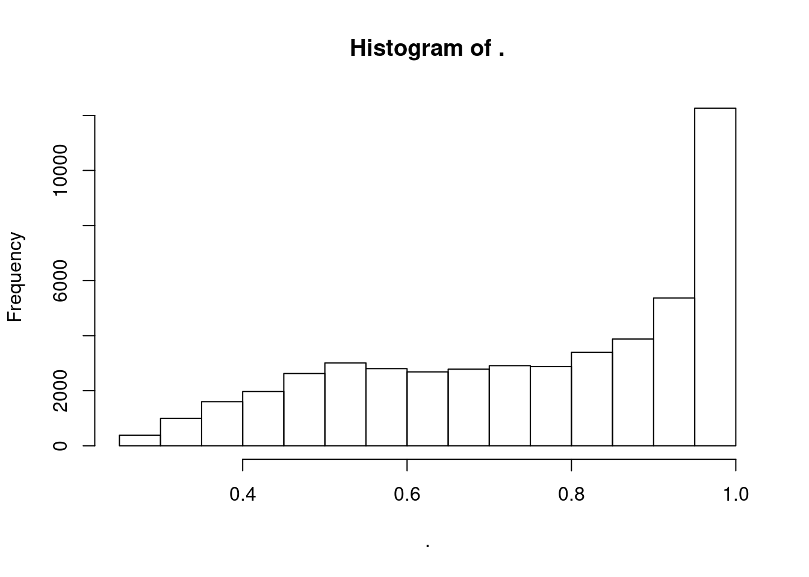
| Version | Author | Date |
|---|---|---|
| fe6333b | Benjmain Fair | 2022-05-25 |
dat %>%
separate(Trait, into=c("PC", "P"), sep=";") %>%
pull(PC) %>% unique() %>% sort() [1] "chRNA.Expression_cheRNA"
[2] "chRNA.Expression_eRNA"
[3] "chRNA.Expression_lncRNA"
[4] "chRNA.Expression_snoRNA"
[5] "chRNA.Expression.Splicing"
[6] "chRNA.IER"
[7] "chRNA.IR"
[8] "chRNA.IRjunctions"
[9] "chRNA.Slopes"
[10] "chRNA.Splicing"
[11] "CTCF"
[12] "Expression.Splicing"
[13] "Expression.Splicing.Subset_YRI"
[14] "H3K27AC"
[15] "H3K36ME3"
[16] "H3K4ME1"
[17] "H3K4ME3"
[18] "MetabolicLabelled.30min"
[19] "MetabolicLabelled.30min.IER"
[20] "MetabolicLabelled.30min.IR"
[21] "MetabolicLabelled.30min.IRjunctions"
[22] "MetabolicLabelled.30min.Splicing"
[23] "MetabolicLabelled.60min"
[24] "MetabolicLabelled.60min.IER"
[25] "MetabolicLabelled.60min.IR"
[26] "MetabolicLabelled.60min.IRjunctions"
[27] "MetabolicLabelled.60min.Splicing"
[28] "polyA.IER"
[29] "polyA.IR"
[30] "polyA.IR.Subset_YRI"
[31] "polyA.IRjunctions"
[32] "polyA.Splicing"
[33] "polyA.Splicing.Subset_YRI"
[34] "ProCap" dat %>%
separate(Trait, into=c("PC", "P"), sep=";") %>%
count(Threshold, PC) %>%
ggplot(aes(x=PC, y=n)) +
geom_col() +
facet_wrap(~Threshold) +
theme_bw() +
labs(title = "Number of Loci:molQTL pairs attempted to colocalize in total") +
theme(axis.text.x = element_text(angle = 45, vjust = 1, hjust=1))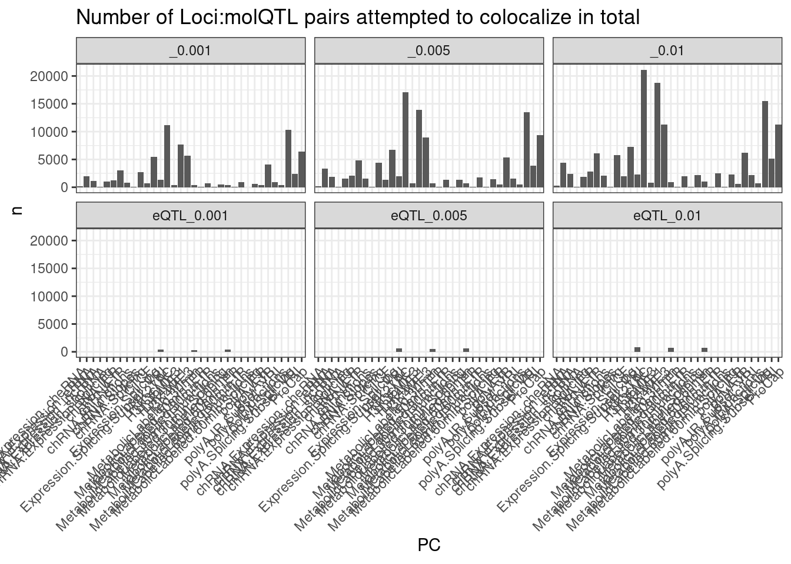
| Version | Author | Date |
|---|---|---|
| fe6333b | Benjmain Fair | 2022-05-25 |
The default posterior probability for colocalization clustering is 0.25 (and the authors don’t recommend going below this)… Above I plotted histogram of posterior probabilties for colocalized clusters.
dat.tidy <- dat %>%
unite(Locus, GeneLocus, Threshold, sep = ":") %>%
left_join(., ., by = "Locus") %>%
filter(Trait.x != Trait.y) %>%
rowwise() %>%
mutate(name = toString(sort(c(Trait.x,Trait.y)) )) %>%
distinct(Locus, name, .keep_all = T) %>%
separate(name, into = c("PC1","P1","DummySpace","PC2","P2"), sep = "[, ;]") %>%
select(-DummySpace) %>%
mutate(PC_ClassPair = paste(PC1, PC2)) %>%
# pull(PC_ClassPair) %>% unique()
mutate(IsColocalizedPair = HyprcolocIteration.x == HyprcolocIteration.y) %>%
replace_na(list(IsColocalizedPair = FALSE))
RNASeqPhenotypes <- c("MetabolicLabelled.30min", "MetabolicLabelled.60min", "Expression.Splicing.Subset_YRI", "chRNA.Expression.Splicing", "H3K36ME3")
dat.tidy %>%
filter((PC1 %in% RNASeqPhenotypes) & (PC2 %in% RNASeqPhenotypes)) %>%
separate(Locus, into=c("Locus", "Threshold"), sep = ":") %>%
group_by(PC1, PC2, Threshold) %>%
summarise(FractionColocs = sum(IsColocalizedPair)/n()) %>%
ungroup() %>%
mutate(TopPCs = paste(PC1, PC2)) %>%
mutate(BottomPCs = paste(PC2, PC1)) %>%
select(-PC1, -PC2) %>%
gather(key = "MatrixHalf", value = "PCs", TopPCs, BottomPCs) %>%
separate(PCs, into=c("PC1", "PC2"), sep = " ") %>%
distinct(PC1, PC2, FractionColocs, Threshold, .keep_all = T) %>%
ggplot(aes(x=PC1, y=PC2, fill=FractionColocs)) +
geom_raster() +
geom_text(aes(label=signif(FractionColocs, 2))) +
scale_fill_viridis(option="B", direction = 1, limits=c(0.5,1)) +
facet_wrap(~Threshold) +
theme_classic() +
theme(axis.text.x = element_text(angle = 90, vjust = 0.5, hjust=1))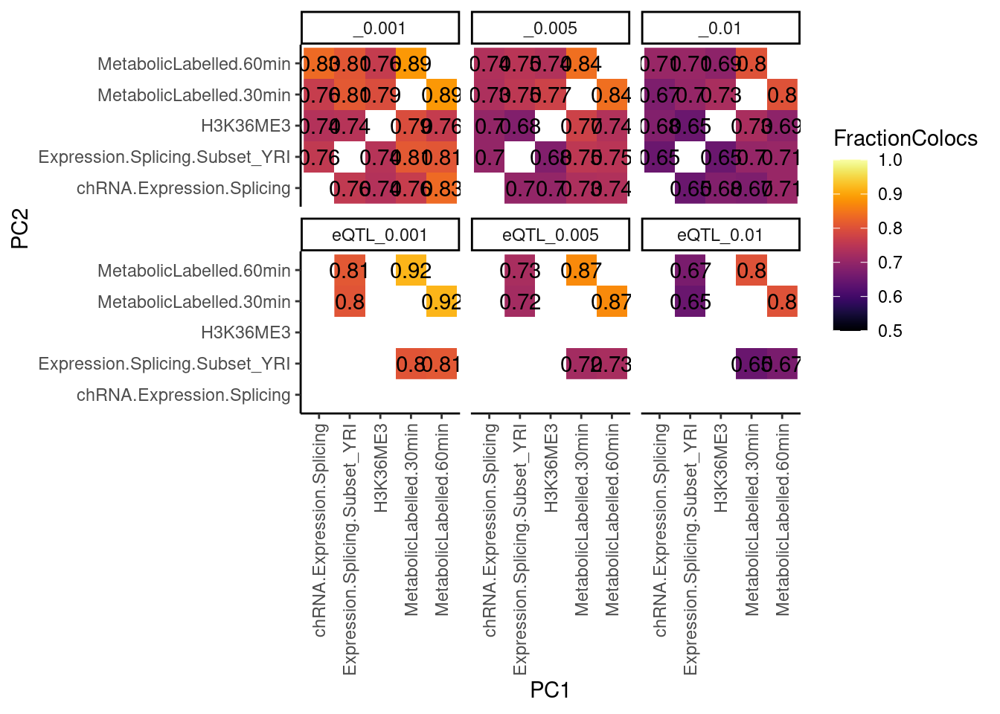
| Version | Author | Date |
|---|---|---|
| fe6333b | Benjmain Fair | 2022-05-25 |
dat.tidy %>%
filter((PC1 %in% RNASeqPhenotypes) & (PC2 %in% RNASeqPhenotypes)) %>%
separate(Locus, into=c("Locus", "Threshold"), sep = ":") %>%
group_by(PC1, PC2, Threshold) %>%
summarise(NumColocAttempts = n()) %>%
ungroup() %>%
mutate(TopPCs = paste(PC1, PC2)) %>%
mutate(BottomPCs = paste(PC2, PC1)) %>%
select(-PC1, -PC2) %>%
gather(key = "MatrixHalf", value = "PCs", TopPCs, BottomPCs) %>%
separate(PCs, into=c("PC1", "PC2"), sep = " ") %>%
distinct(PC1, PC2, Threshold, NumColocAttempts, .keep_all = T) %>%
ggplot(aes(x=PC1, y=PC2, fill=NumColocAttempts)) +
geom_raster() +
geom_text(aes(label=NumColocAttempts)) +
scale_fill_viridis(option="B", direction = 1, limits=c(0,1000)) +
facet_wrap(~Threshold) +
theme_classic() +
theme(axis.text.x = element_text(angle = 90, vjust = 0.5, hjust=1))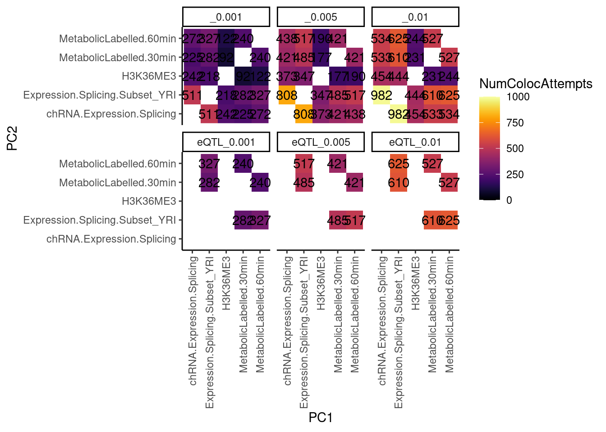
| Version | Author | Date |
|---|---|---|
| fe6333b | Benjmain Fair | 2022-05-25 |
As expected, filtering for genes with clusters with a higher minimum colocalization probability results in less colocalizations, though not be too much.
But really what I want to know is why things aren’t colocalizing. I could consider lowering that colocalization threshold, but the hyprcoloc authors recommend against that. Maybe a different approach would be to look at the genes that did versus didn’t colocalize, to consider being more stringent what things i attempt to colocalize
Files <- paste0("../code/QTLs/QTLTools/", RNASeqPhenotypes,"/PermutationPass.txt.gz") %>%
setNames(RNASeqPhenotypes)
StandardPermutationPassResults <- lapply(Files, read_delim, delim=' ') %>%
bind_rows(.id="Phenotype") %>%
select(PC=Phenotype, P=phe_id, p=adj_beta_pval)Parsed with column specification:
cols(
.default = col_double(),
phe_id = col_character(),
phe_chr = col_character(),
phe_strd = col_character(),
var_id = col_character(),
var_chr = col_character()
)See spec(...) for full column specifications.Parsed with column specification:
cols(
.default = col_double(),
phe_id = col_character(),
phe_chr = col_character(),
phe_strd = col_character(),
var_id = col_character(),
var_chr = col_character()
)See spec(...) for full column specifications.Parsed with column specification:
cols(
.default = col_double(),
phe_id = col_character(),
phe_chr = col_character(),
phe_strd = col_character(),
var_id = col_character(),
var_chr = col_character()
)See spec(...) for full column specifications.Parsed with column specification:
cols(
.default = col_double(),
phe_id = col_character(),
phe_chr = col_character(),
phe_strd = col_character(),
var_id = col_character(),
var_chr = col_character()
)See spec(...) for full column specifications.Parsed with column specification:
cols(
.default = col_double(),
phe_id = col_character(),
phe_chr = col_character(),
phe_strd = col_character(),
var_id = col_character(),
var_chr = col_character()
)See spec(...) for full column specifications.Let’s check pi statistic for metabolic 30, 60min, polyA RNA-seq eQTLs… I have already calculated top eQTL SNP nominal P value for each FDR<10% eGene from each assay, and also got the same p-value across the other assays. Here I’ll read in that data and calculate pi1 statistic with qvalue package
pvals <- read_tsv("../code/QC/PvalsForPi1_0.1.txt.gz")Parsed with column specification:
cols(
PhenotypeID = col_character(),
DiscoveryPhenotypeClass = col_character(),
DiscoveryPhenotypePermutationP = col_double(),
DiscoveryPhenotypePermutationQ = col_double(),
TestPhenotypeClass = col_character(),
TestPhenotypeP = col_double()
)head(pvals)# A tibble: 6 x 6
PhenotypeID DiscoveryPhenot… DiscoveryPhenot… DiscoveryPhenot…
<chr> <chr> <dbl> <dbl>
1 IntID.8317… chRNA.IR 0.00158 0.0438
2 IntID.8317… chRNA.IR 0.00158 0.0438
3 IntID.8317… chRNA.IR 0.00158 0.0438
4 IntID.8317… chRNA.IR 0.00158 0.0438
5 IntID.8317… chRNA.IR 0.00158 0.0438
6 IntID.9554… chRNA.IR 0.000279 0.0113
# … with 2 more variables: TestPhenotypeClass <chr>, TestPhenotypeP <dbl>First I’ll estimate pi1 by eye by looking at histogram of Pvals:
pvals %>%
filter((TestPhenotypeClass %in% RNASeqPhenotypes ) & (DiscoveryPhenotypeClass %in% RNASeqPhenotypes)) %>%
ggplot(aes(x=TestPhenotypeP)) +
geom_histogram() +
facet_grid(rows=vars(TestPhenotypeClass), cols = vars(DiscoveryPhenotypeClass)) +
theme_bw()`stat_bin()` using `bins = 30`. Pick better value with `binwidth`.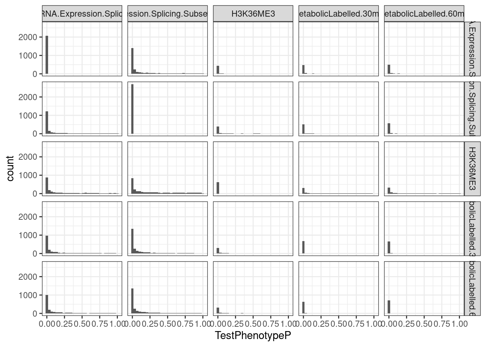
| Version | Author | Date |
|---|---|---|
| fe6333b | Benjmain Fair | 2022-05-25 |
pvals %>%
filter((TestPhenotypeClass %in% RNASeqPhenotypes ) & (DiscoveryPhenotypeClass %in% RNASeqPhenotypes)) %>%
filter(!TestPhenotypeClass==DiscoveryPhenotypeClass) %>%
group_by(TestPhenotypeClass, DiscoveryPhenotypeClass) %>%
summarise(pi1 = 1-qvalue(TestPhenotypeP)$pi0) %>%
ggplot(aes(x=TestPhenotypeClass, y=DiscoveryPhenotypeClass, fill=pi1)) +
geom_raster() +
geom_text(aes(label=signif(pi1, 2))) +
scale_fill_viridis(option="B", direction = 1, limits=c(0,1)) +
theme_classic() +
theme(axis.text.x = element_text(angle = 45, hjust=1))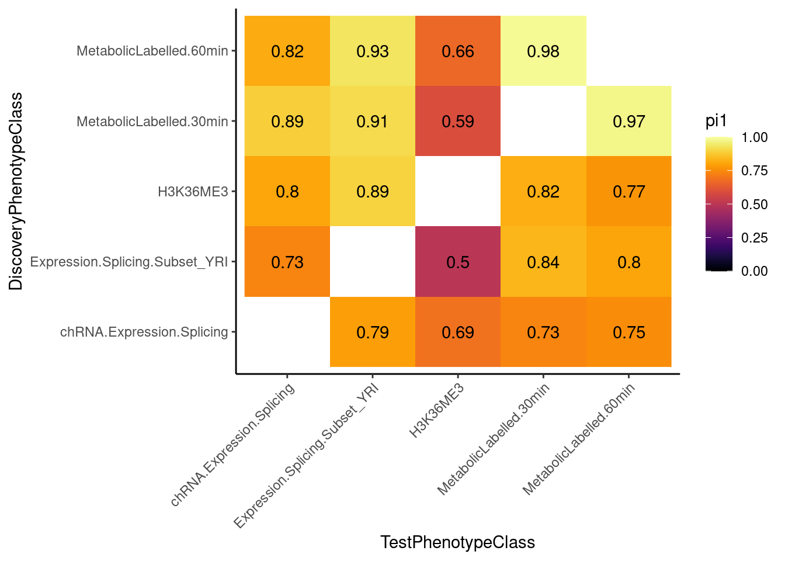
| Version | Author | Date |
|---|---|---|
| fe6333b | Benjmain Fair | 2022-05-25 |
myfunc <- function(TestPhenotypeP){
return(1-qvalue(TestPhenotypeP)$pi0)
}Let’s create that pi1 stat table for all phenotypes again
pvals %>%
filter((TestPhenotypeClass %in% RNASeqPhenotypes ) & (DiscoveryPhenotypeClass %in% RNASeqPhenotypes)) %>%
filter(!TestPhenotypeClass==DiscoveryPhenotypeClass) %>%
group_by(TestPhenotypeClass, DiscoveryPhenotypeClass) %>%
summarise(pi1 = 1-qvalue(TestPhenotypeP)$pi0) %>%
ggplot(aes(x=TestPhenotypeClass, y=DiscoveryPhenotypeClass, fill=pi1)) +
geom_raster() +
geom_text(aes(label=signif(pi1, 2))) +
scale_fill_viridis(option="B", direction = 1, limits=c(0,1)) +
theme_classic()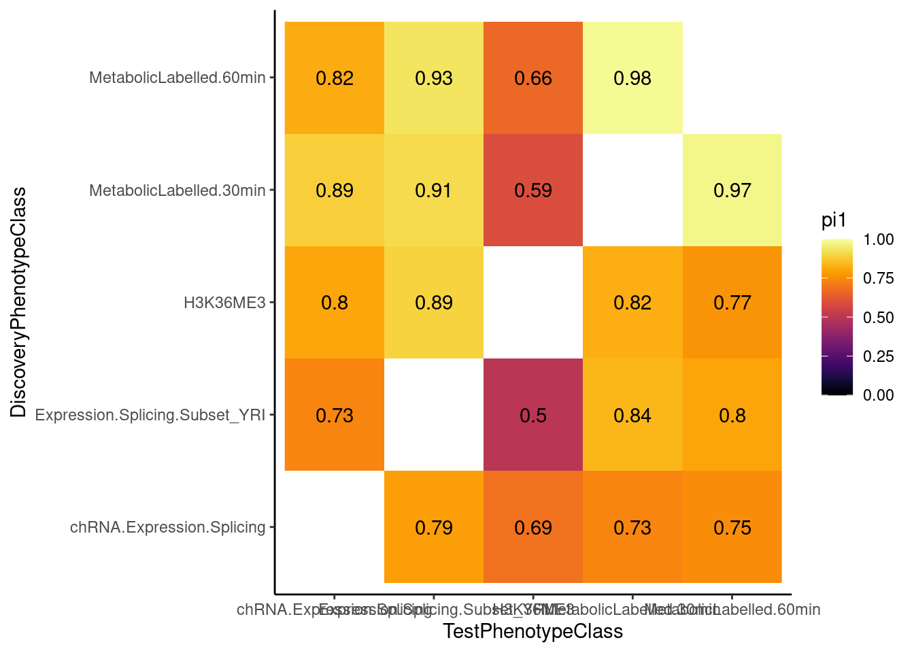
| Version | Author | Date |
|---|---|---|
| fe6333b | Benjmain Fair | 2022-05-25 |
pvals$TestPhenotypeClass %>% unique() [1] "chRNA.IR"
[2] "polyA.IR"
[3] "polyA.IR.Subset_YRI"
[4] "MetabolicLabelled.30min.IR"
[5] "MetabolicLabelled.60min.IR"
[6] "Expression.Splicing"
[7] "chRNA.Expression.Splicing"
[8] "MetabolicLabelled.30min"
[9] "MetabolicLabelled.60min"
[10] "Expression.Splicing.Subset_YRI"
[11] "H3K36ME3"
[12] "H3K27AC"
[13] "CTCF"
[14] "H3K4ME3"
[15] "chRNA.Splicing"
[16] "polyA.Splicing"
[17] "polyA.Splicing.Subset_YRI"
[18] "MetabolicLabelled.30min.Splicing"
[19] "chRNA.Expression_cheRNA"
[20] "chRNA.Expression_eRNA"
[21] "ProCap"
[22] "chRNA.Expression_lncRNA"
[23] "chRNA.Expression_snoRNA"
[24] "chRNA.Slopes"
[25] "H3K4ME1"
[26] "chRNA.IER"
[27] "chRNA.IRjunctions"
[28] "polyA.IRjunctions"
[29] "polyA.IER"
[30] "MetabolicLabelled.30min.IER"
[31] "MetabolicLabelled.60min.IER"
[32] "MetabolicLabelled.30min.IRjunctions"
[33] "MetabolicLabelled.60min.IRjunctions"SplicingPhenotypes <- c("chRNA.Splicing", "polyA.Splicing", "MetabolicLabelled.30min.Splicing")…same for intron retention phenotypes
pvals %>%
filter((TestPhenotypeClass %in% SplicingPhenotypes ) & (DiscoveryPhenotypeClass %in% SplicingPhenotypes)) %>%
filter(!TestPhenotypeClass==DiscoveryPhenotypeClass) %>%
group_by(TestPhenotypeClass, DiscoveryPhenotypeClass) %>%
summarise(pi1 = 1-qvalue(TestPhenotypeP)$pi0) %>%
ggplot(aes(x=TestPhenotypeClass, y=DiscoveryPhenotypeClass, fill=pi1)) +
geom_raster() +
geom_text(aes(label=signif(pi1, 2))) +
scale_fill_viridis(option="B", direction = 1, limits=c(0,1)) +
theme_classic() +
theme(axis.text.x = element_text(angle = 45, hjust=1))
IntronRetentionPhenotypes <- c("polyA.IER", "chRNA.IER", "MetabolicLabelled.30min.IER")
pvals %>%
filter((TestPhenotypeClass %in% IntronRetentionPhenotypes ) & (DiscoveryPhenotypeClass %in% IntronRetentionPhenotypes)) %>%
filter(!TestPhenotypeClass==DiscoveryPhenotypeClass) %>%
group_by(TestPhenotypeClass, DiscoveryPhenotypeClass) %>%
summarise(pi1 = 1-qvalue(TestPhenotypeP)$pi0) %>%
ggplot(aes(x=TestPhenotypeClass, y=DiscoveryPhenotypeClass, fill=pi1)) +
geom_raster() +
geom_text(aes(label=signif(pi1, 2))) +
scale_fill_viridis(option="B", direction = 1, limits=c(0,1)) +
theme_classic() +
theme(axis.text.x = element_text(angle = 45, hjust=1))Next let’s check some manhattan plots for things that did or didn’t colocalize… I’ll forget about adding in LD patterns like locuszoom… even though it would be helpful to visualize it might complicate the matter.
First let’s get some cases where things did colocalize:
dat.tidy %>%
pull(PC_ClassPair) %>% unique()
Files <- paste0("../code/QTLs/QTLTools/", RNASeqPhenotypes,"/NominalPassForColoc.txt.tabix.gz") %>%
setNames(RNASeqPhenotypes)
GenePos <- read_tsv("../code/ExpressionAnalysis/polyA/ExpressedGeneList.txt", col_names = c("Chrom", "start", "stop", "Locus", "score", "strand"))
GenesToPlot <- dat.tidy %>%
# filter(IsColocalizedPair) %>%
filter(PC_ClassPair == "MetabolicLabelled.30min MetabolicLabelled.60min") %>%
group_by(IsColocalizedPair) %>%
sample_n(10) %>%
ungroup() %>%
select(Locus, IsColocalizedPair, topSNP.x, ColocPr.y) %>%
separate(topSNP.x, into=c("topSNPChr", "topSNPPos", "topSNPRef", "TopSNPAlt"), sep=":", convert=T) %>%
select(Locus, IsColocalizedPair, topSNPPos, ColocPr.y)
CoommandsToReadInStats <- GenePos %>%
inner_join(GenesToPlot, by="Locus") %>%
slice(rep(1:n(), each=3)) %>%
mutate(Filename = rep_len(Files, length.out=n())) %>%
mutate(cmd = str_glue("tabix -h {Filename} {Chrom}:{start-100000}-{stop+100000}")) %>%
mutate(name = paste(Locus, str_replace(Filename, "../code/QTLs/QTLTools/(.+?)/NominalPassForColoc.txt.tabix.gz", "\\1"), IsColocalizedPair, ColocPr.y, sep = ":")) %>%
select(name, cmd) %>% deframe()
# dat <- fread("tabix ../code/QTLs/QTLTools/MetabolicLabelled.30min/NominalPassForColoc.txt.tabix.gz chr1:19582212-19899945")
StandardNominalPassResults <- lapply(CoommandsToReadInStats, fread) %>%
bind_rows(.id="Phenotype") %>%
separate('#phe_id', into=c("phe_id", "Locus"), sep=":") %>%
separate('Phenotype', into=c("LocusFromHyprcoloc", "PhenotypeClass", "IsColocalizedPair", "ColocPr"), sep=":", convert=T)
Plt <- StandardNominalPassResults %>%
filter(phe_id == LocusFromHyprcoloc) %>%
group_by(Locus) %>%
add_count(var_id) %>%
filter(n == length(RNASeqPhenotypes)) %>%
arrange(IsColocalizedPair, Locus) %>%
mutate(ColocPr = if_else(IsColocalizedPair, ColocPr, 0)) %>%
# bind_rows(GenesToPlot) %>%
ggplot(aes(x=var_from, y=-log10(nom_pval), color=PhenotypeClass)) +
# geom_vline(aes(xintercept=topSNPPos)) +
geom_text(aes(label=ColocPr), x=Inf, y=Inf, color="black", vjust=2) +
geom_point() +
facet_wrap(~Locus+PhenotypeClass+IsColocalizedPair, scales="free", ncol=3, labeller = label_wrap_gen()) +
# facet_grid(rows=vars(Locus), cols=vars(PhenotypeClass), scales="free") +
theme_classic()
ggsave("../code/scratch/hyprcoloc_coloc_manahantan.pdf", height=60, width=20, limitsize=F)
Plt2<-StandardNominalPassResults %>%
filter(phe_id == LocusFromHyprcoloc) %>%
filter(Locus=="ENSG00000133789.15") %>%
filter(PhenotypeClass %in% c("MetabolicLabelled.30min", "MetabolicLabelled.60min")) %>%
select(nom_pval, PhenotypeClass, var_id) %>%
spread("PhenotypeClass", "nom_pval" ) %>%
ggplot(aes(x=-log10(MetabolicLabelled.30min), y=-log10(MetabolicLabelled.60min))) +
geom_point()
ggsave("../code/scratch/hyprcoloc_coloc_coloc_example.pdf")Ok now let’s check how many eQTLs also had a colocalizing chromatin QTL at the promoter/TSS…
More precisely, I will count the number of gene/peak pair that is in PeaksToTSS and also in colocalization. What fraction of eGenes (FDR<10%) are also in this list? What fraction of eGenes have a gene/peak pair that is not in PeaksToTSS (eg, enhancers).
First, about creating a mapping of peaks to TSS (promoter)…
ExpressedGenes <- read_tsv("../code/ExpressionAnalysis/polyA/ExpressedGeneList.txt", col_names = c("chr","start", "stop", "gene", "score", "strand")) %>% pull("gene")Parsed with column specification:
cols(
chr = col_character(),
start = col_double(),
stop = col_double(),
gene = col_character(),
score = col_character(),
strand = col_character()
)peak_dat <- Sys.glob("../code/Misc/PeaksClosestToTSS/*.bed.gz") %>%
setNames(str_replace(., "../code/Misc/PeaksClosestToTSS/(.+?).bed", "\\1")) %>%
lapply(read_tsv, col_names = c("gene_chr", "gene_start", "gene_stop", "geneid", "gene_score", "gene_strand", "peak_chr", "peak_start", "peak_end", "peak_name", "distance")) %>%
bind_rows(.id="dataset") %>%
filter(geneid %in% ExpressedGenes) %>%
separate(dataset, into=c("Mark", "Type"), sep="_", remove=F)Parsed with column specification:
cols(
gene_chr = col_character(),
gene_start = col_double(),
gene_stop = col_double(),
geneid = col_character(),
gene_score = col_character(),
gene_strand = col_character(),
peak_chr = col_character(),
peak_start = col_double(),
peak_end = col_double(),
peak_name = col_character(),
distance = col_double()
)Parsed with column specification:
cols(
gene_chr = col_character(),
gene_start = col_double(),
gene_stop = col_double(),
geneid = col_character(),
gene_score = col_character(),
gene_strand = col_character(),
peak_chr = col_character(),
peak_start = col_double(),
peak_end = col_double(),
peak_name = col_character(),
distance = col_double()
)
Parsed with column specification:
cols(
gene_chr = col_character(),
gene_start = col_double(),
gene_stop = col_double(),
geneid = col_character(),
gene_score = col_character(),
gene_strand = col_character(),
peak_chr = col_character(),
peak_start = col_double(),
peak_end = col_double(),
peak_name = col_character(),
distance = col_double()
)
Parsed with column specification:
cols(
gene_chr = col_character(),
gene_start = col_double(),
gene_stop = col_double(),
geneid = col_character(),
gene_score = col_character(),
gene_strand = col_character(),
peak_chr = col_character(),
peak_start = col_double(),
peak_end = col_double(),
peak_name = col_character(),
distance = col_double()
)
Parsed with column specification:
cols(
gene_chr = col_character(),
gene_start = col_double(),
gene_stop = col_double(),
geneid = col_character(),
gene_score = col_character(),
gene_strand = col_character(),
peak_chr = col_character(),
peak_start = col_double(),
peak_end = col_double(),
peak_name = col_character(),
distance = col_double()
)
Parsed with column specification:
cols(
gene_chr = col_character(),
gene_start = col_double(),
gene_stop = col_double(),
geneid = col_character(),
gene_score = col_character(),
gene_strand = col_character(),
peak_chr = col_character(),
peak_start = col_double(),
peak_end = col_double(),
peak_name = col_character(),
distance = col_double()
)peak_dat %>%
filter(distance <2000 & distance > -2000) %>%
# filter(!distance == 0) %>%
ggplot(aes(x=distance, group=dataset, color=Type)) +
# geom_density() +
geom_freqpoly(binwidth=100) +
coord_cartesian(xlim=c(-2000, 2000)) +
facet_wrap(~Mark) +
labs(title = "Distance from TSS to closest peak") +
theme_bw()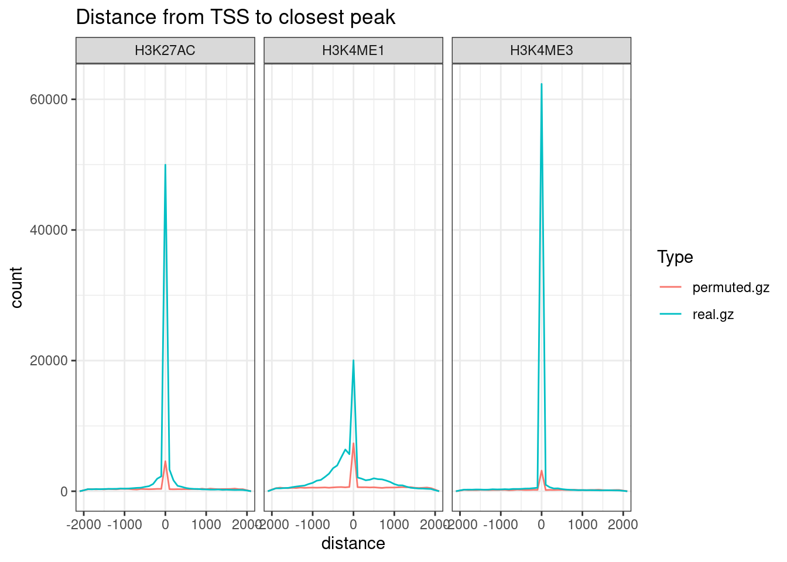
| Version | Author | Date |
|---|---|---|
| fe6333b | Benjmain Fair | 2022-05-25 |
peak_dat %>%
filter(distance <2000 & distance > -2000) %>%
filter(!distance == 0) %>%
ggplot(aes(x=distance, group=dataset, color=Type)) +
# geom_density() +
geom_freqpoly(binwidth=100) +
coord_cartesian(xlim=c(-2000, 2000)) +
facet_wrap(~Mark) +
labs(title = "Distance from TSS to closest peak",
caption = "Overlapping peaks removed") +
theme_bw()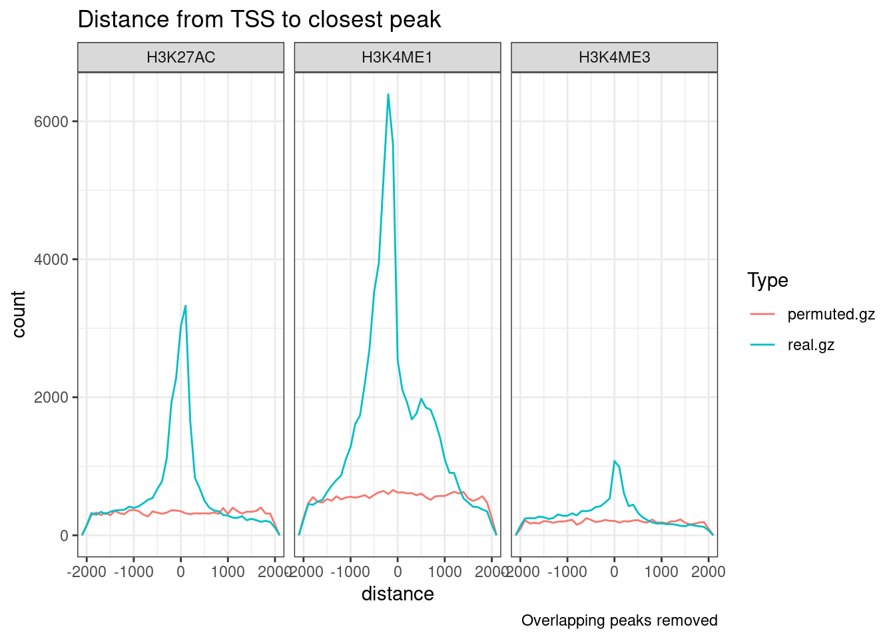
| Version | Author | Date |
|---|---|---|
| fe6333b | Benjmain Fair | 2022-05-25 |
First let’s read in the file that maps peaks to TSS’s based on distance threshold of 500
PeaksToTSS <- Sys.glob("../code/Misc/PeaksClosestToTSS/*_assigned.tsv.gz") %>%
setNames(str_replace(., "../code/Misc/PeaksClosestToTSS/(.+?)_assigned.tsv.gz", "\\1")) %>%
lapply(read_tsv) %>%
bind_rows(.id="ChromatinMark") %>%
mutate(GenePeakPair = paste(gene, peak, sep = ";"))Parsed with column specification:
cols(
chrom = col_character(),
TSS_start = col_double(),
gene = col_character(),
strand = col_character(),
peak = col_character(),
distance = col_double()
)
Parsed with column specification:
cols(
chrom = col_character(),
TSS_start = col_double(),
gene = col_character(),
strand = col_character(),
peak = col_character(),
distance = col_double()
)
Parsed with column specification:
cols(
chrom = col_character(),
TSS_start = col_double(),
gene = col_character(),
strand = col_character(),
peak = col_character(),
distance = col_double()
)And plot some summary stats. How many TSS peaks per gene?
PeaksToTSS %>%
count(ChromatinMark, gene) %>%
right_join(
expand.grid(gene = ExpressedGenes, ChromatinMark = c("H3K4ME3", "H3K4ME1", "H3K27AC")),
by = c("gene", "ChromatinMark")
) %>%
replace_na(list(n=0)) %>%
ggplot(aes(x=n)) +
stat_ecdf() +
coord_cartesian(xlim=c(0,10)) +
facet_wrap(~ChromatinMark) +
labs(title = "Genes have variable number of TSS peaks", x="Number of TSS peaks per gene", y="ecdf") +
theme_bw() Warning: Column `gene` joining character vector and factor, coercing into
character vectorWarning: Column `ChromatinMark` joining character vector and factor,
coercing into character vector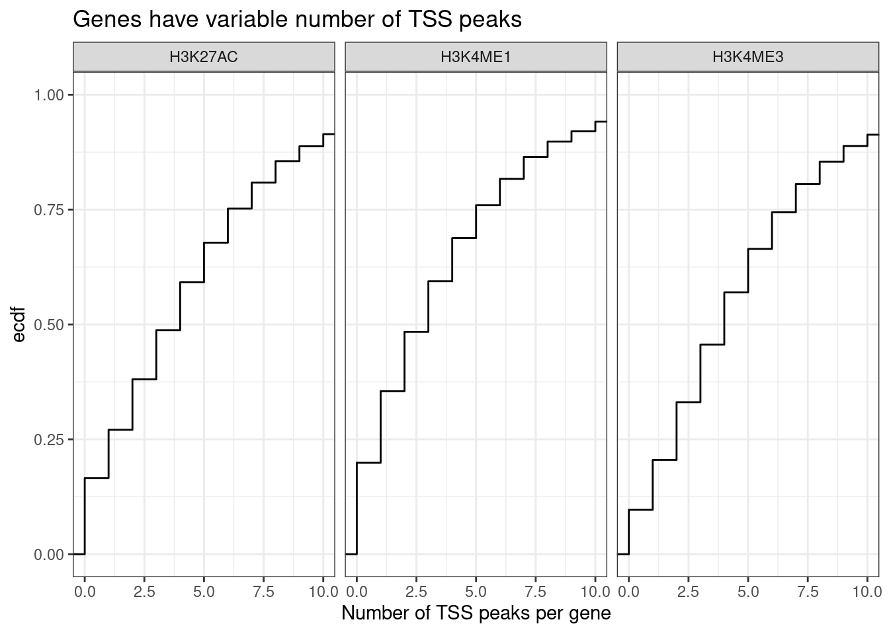
| Version | Author | Date |
|---|---|---|
| fe6333b | Benjmain Fair | 2022-05-25 |
Because I was selecting eQTLs for colocalization based on nominal P value, i should get a sense of what these thresholds mean in terms of FDR…
eQTLs <- read_delim("../code/QTLs/QTLTools/Expression.Splicing.Subset_YRI/PermutationPassForColoc.txt.gz", delim=' ') %>%
mutate(q = qvalue(adj_beta_pval)$qvalues)Parsed with column specification:
cols(
.default = col_double(),
phe_id = col_character(),
phe_chr = col_character(),
phe_strd = col_character(),
var_id = col_character(),
var_chr = col_character()
)See spec(...) for full column specifications.ggplot(eQTLs, aes(x=adj_beta_pval, y=q)) +
geom_point() +
geom_vline(xintercept = 0.01) +
geom_vline(xintercept = 0.005) +
geom_vline(xintercept = 0.001) +
# scale_x_continuous(trans="log10") +
# scale_y_continuous(trans="log10") +
coord_cartesian(xlim=c(0,0.011), ylim=c(0,0.05)) +
labs(title = "Colocalization attempt theshold corresponds to polyA eQTL FDR < 3% for",
y= "FDR",
x="Permutation test nominal P") +
theme_bw()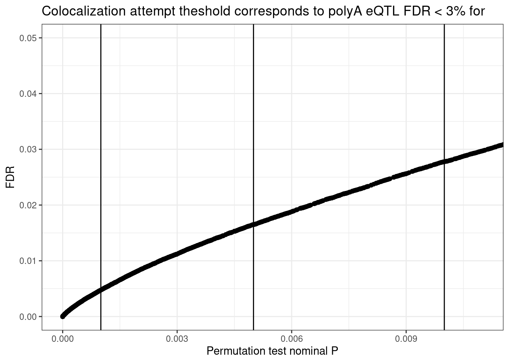
| Version | Author | Date |
|---|---|---|
| fe6333b | Benjmain Fair | 2022-05-25 |
Ok that makes sense for eQTLs, but based on the amount of enrichment of positive tests (ie the pi1 stat), the FDR will correspond to different P value. I thought it was most reasonable to attempt to colocalized based on a Pvalue threshold, but I am sort of now worried about chance colocalizations from false positive QTL signals. Let’s plot histograms of permutation pass Pvalues for all traits, and see how this pvalue threshold corresponds to fdr for different traits:
PermutationPassResults <- Sys.glob("../code/QTLs/QTLTools/*/PermutationPassForColoc.txt.gz") %>%
setNames(str_replace(., "../code/QTLs/QTLTools/(.+?)/PermutationPassForColoc.txt.gz", "\\1")) %>%
lapply(read_delim, delim=' ') %>%
bind_rows(.id="Phenotype") %>%
group_by(Phenotype) %>%
mutate(q = qvalue(adj_beta_pval)$qvalues)Parsed with column specification:
cols(
.default = col_double(),
phe_id = col_character(),
phe_chr = col_character(),
phe_strd = col_character(),
var_id = col_character(),
var_chr = col_character()
)See spec(...) for full column specifications.Parsed with column specification:
cols(
.default = col_double(),
phe_id = col_character(),
phe_chr = col_character(),
phe_strd = col_character(),
var_id = col_character(),
var_chr = col_character()
)See spec(...) for full column specifications.Parsed with column specification:
cols(
.default = col_double(),
phe_id = col_character(),
phe_chr = col_character(),
phe_strd = col_character(),
var_id = col_character(),
var_chr = col_character()
)See spec(...) for full column specifications.Parsed with column specification:
cols(
.default = col_double(),
phe_id = col_character(),
phe_chr = col_character(),
phe_strd = col_character(),
var_id = col_character(),
var_chr = col_character()
)See spec(...) for full column specifications.Parsed with column specification:
cols(
.default = col_double(),
phe_id = col_character(),
phe_chr = col_character(),
phe_strd = col_character(),
var_id = col_character(),
var_chr = col_character()
)See spec(...) for full column specifications.Parsed with column specification:
cols(
.default = col_double(),
phe_id = col_character(),
phe_chr = col_character(),
phe_strd = col_character(),
var_id = col_character(),
var_chr = col_character()
)See spec(...) for full column specifications.Parsed with column specification:
cols(
.default = col_double(),
phe_id = col_character(),
phe_chr = col_character(),
phe_strd = col_character(),
var_id = col_character(),
var_chr = col_character()
)See spec(...) for full column specifications.Parsed with column specification:
cols(
.default = col_double(),
phe_id = col_character(),
phe_chr = col_character(),
phe_strd = col_character(),
var_id = col_character(),
var_chr = col_character()
)See spec(...) for full column specifications.Parsed with column specification:
cols(
.default = col_double(),
phe_id = col_character(),
phe_chr = col_character(),
phe_strd = col_character(),
var_id = col_character(),
var_chr = col_character()
)See spec(...) for full column specifications.Parsed with column specification:
cols(
.default = col_double(),
phe_id = col_character(),
phe_chr = col_character(),
phe_strd = col_character(),
var_id = col_character(),
var_chr = col_character()
)See spec(...) for full column specifications.Parsed with column specification:
cols(
.default = col_double(),
phe_id = col_character(),
phe_chr = col_character(),
phe_strd = col_character(),
var_id = col_character(),
var_chr = col_character()
)See spec(...) for full column specifications.Parsed with column specification:
cols(
.default = col_double(),
phe_id = col_character(),
phe_chr = col_character(),
phe_strd = col_character(),
var_id = col_character(),
var_chr = col_character()
)See spec(...) for full column specifications.Parsed with column specification:
cols(
.default = col_double(),
phe_id = col_character(),
phe_chr = col_character(),
phe_strd = col_character(),
var_id = col_character(),
var_chr = col_character()
)See spec(...) for full column specifications.Parsed with column specification:
cols(
.default = col_double(),
phe_id = col_character(),
phe_chr = col_character(),
phe_strd = col_character(),
var_id = col_character(),
var_chr = col_character()
)See spec(...) for full column specifications.Parsed with column specification:
cols(
.default = col_double(),
phe_id = col_character(),
phe_chr = col_character(),
phe_strd = col_character(),
var_id = col_character(),
var_chr = col_character()
)See spec(...) for full column specifications.Parsed with column specification:
cols(
.default = col_double(),
phe_id = col_character(),
phe_chr = col_character(),
phe_strd = col_character(),
var_id = col_character(),
var_chr = col_character()
)See spec(...) for full column specifications.Parsed with column specification:
cols(
.default = col_double(),
phe_id = col_character(),
phe_chr = col_character(),
phe_strd = col_character(),
var_id = col_character(),
var_chr = col_character()
)See spec(...) for full column specifications.Parsed with column specification:
cols(
.default = col_double(),
phe_id = col_character(),
phe_chr = col_character(),
phe_strd = col_character(),
var_id = col_character(),
var_chr = col_character()
)See spec(...) for full column specifications.Parsed with column specification:
cols(
.default = col_double(),
phe_id = col_character(),
phe_chr = col_character(),
phe_strd = col_character(),
var_id = col_character(),
var_chr = col_character()
)See spec(...) for full column specifications.Parsed with column specification:
cols(
.default = col_double(),
phe_id = col_character(),
phe_chr = col_character(),
phe_strd = col_character(),
var_id = col_character(),
var_chr = col_character()
)See spec(...) for full column specifications.Parsed with column specification:
cols(
.default = col_double(),
phe_id = col_character(),
phe_chr = col_character(),
phe_strd = col_character(),
var_id = col_character(),
var_chr = col_character()
)See spec(...) for full column specifications.Parsed with column specification:
cols(
.default = col_double(),
phe_id = col_character(),
phe_chr = col_character(),
phe_strd = col_character(),
var_id = col_character(),
var_chr = col_character()
)See spec(...) for full column specifications.Parsed with column specification:
cols(
.default = col_double(),
phe_id = col_character(),
phe_chr = col_character(),
phe_strd = col_character(),
var_id = col_character(),
var_chr = col_character()
)See spec(...) for full column specifications.Parsed with column specification:
cols(
.default = col_double(),
phe_id = col_character(),
phe_chr = col_character(),
phe_strd = col_character(),
var_id = col_character(),
var_chr = col_character()
)See spec(...) for full column specifications.Parsed with column specification:
cols(
.default = col_double(),
phe_id = col_character(),
phe_chr = col_character(),
phe_strd = col_character(),
var_id = col_character(),
var_chr = col_character()
)See spec(...) for full column specifications.Parsed with column specification:
cols(
.default = col_double(),
phe_id = col_character(),
phe_chr = col_character(),
phe_strd = col_character(),
var_id = col_character(),
var_chr = col_character()
)See spec(...) for full column specifications.Parsed with column specification:
cols(
.default = col_double(),
phe_id = col_character(),
phe_chr = col_character(),
phe_strd = col_character(),
var_id = col_character(),
var_chr = col_character()
)See spec(...) for full column specifications.Parsed with column specification:
cols(
.default = col_double(),
phe_id = col_character(),
phe_chr = col_character(),
phe_strd = col_character(),
var_id = col_character(),
var_chr = col_character()
)See spec(...) for full column specifications.Parsed with column specification:
cols(
.default = col_double(),
phe_id = col_character(),
phe_chr = col_character(),
phe_strd = col_character(),
var_id = col_character(),
var_chr = col_character()
)See spec(...) for full column specifications.Parsed with column specification:
cols(
.default = col_double(),
phe_id = col_character(),
phe_chr = col_character(),
phe_strd = col_character(),
var_id = col_character(),
var_chr = col_character()
)See spec(...) for full column specifications.Parsed with column specification:
cols(
.default = col_double(),
phe_id = col_character(),
phe_chr = col_character(),
phe_strd = col_character(),
var_id = col_character(),
var_chr = col_character()
)See spec(...) for full column specifications.Parsed with column specification:
cols(
.default = col_double(),
phe_id = col_character(),
phe_chr = col_character(),
phe_strd = col_character(),
var_id = col_character(),
var_chr = col_character()
)See spec(...) for full column specifications.Parsed with column specification:
cols(
.default = col_double(),
phe_id = col_character(),
phe_chr = col_character(),
phe_strd = col_character(),
var_id = col_character(),
var_chr = col_character()
)See spec(...) for full column specifications.Parsed with column specification:
cols(
.default = col_double(),
phe_id = col_character(),
phe_chr = col_character(),
phe_strd = col_character(),
var_id = col_character(),
var_chr = col_character()
)See spec(...) for full column specifications.PermutationPassResults %>%
ggplot(aes(x=adj_beta_pval)) +
geom_histogram() +
facet_wrap(~Phenotype, scales="free_y") +
theme_classic()`stat_bin()` using `bins = 30`. Pick better value with `binwidth`.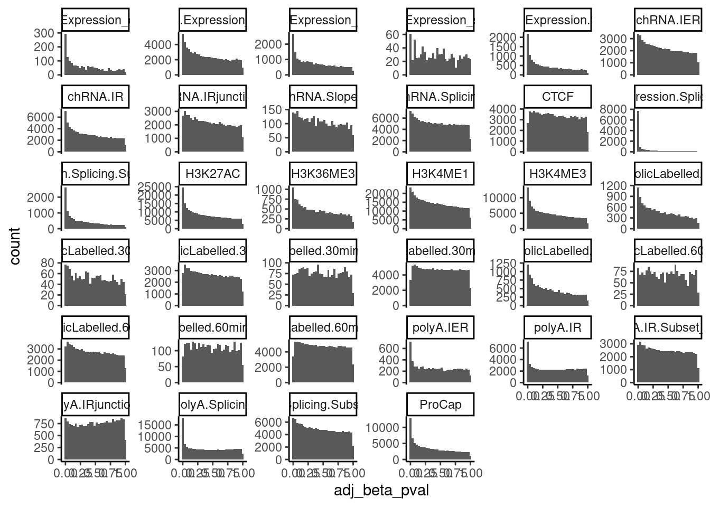
| Version | Author | Date |
|---|---|---|
| fe6333b | Benjmain Fair | 2022-05-25 |
PermutationPassResults %>%
ggplot(aes(x=adj_beta_pval)) +
geom_histogram() +
facet_wrap(~Phenotype, scales="free_y", labeller = label_wrap_gen()) +
theme_classic()`stat_bin()` using `bins = 30`. Pick better value with `binwidth`.
| Version | Author | Date |
|---|---|---|
| fe6333b | Benjmain Fair | 2022-05-25 |
PermutationPassResults %>%
select(Phenotype, adj_beta_pval, q) %>%
group_by(Phenotype) %>%
slice(which.min(abs(adj_beta_pval - 0.01)),
which.min(abs(adj_beta_pval - 0.005)),
which.min(abs(adj_beta_pval - 0.001))) %>%
ungroup() %>%
arrange(Phenotype, adj_beta_pval) %>%
group_by(Phenotype) %>%
mutate(ThresholdCondition = row_number()) %>%
mutate(Threshold = recode(ThresholdCondition, `1`="0.001", `2`="0.005", `3`="0.01")) %>%
ggplot(aes(x=Threshold, y=q)) +
geom_col() +
facet_wrap(~Phenotype, scales="free_y", labeller = labeller(groupwrap = label_wrap_gen(10))) +
labs(y="FDR", title = "P value thresholds correspond to slightly different FDR", x="Permutation nominal P value threshold") +
theme_classic()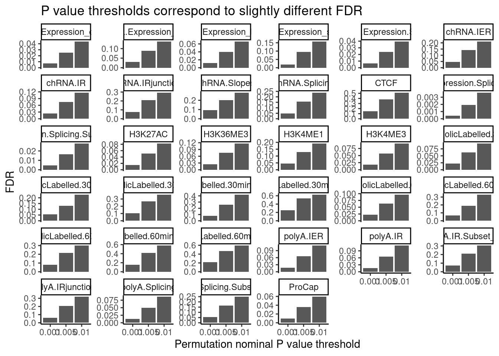
| Version | Author | Date |
|---|---|---|
| fe6333b | Benjmain Fair | 2022-05-25 |
Ok now let’s get to asking the question about how many eQTLs colocalize with a promoter peak QTL at the TSS.
eQTLs %>% filter(adj_beta_pval<0.005) %>% nrow()[1] 1874dat %>% head()# A tibble: 6 x 8
Threshold GeneLocus HyprcolocIterat… PosteriorColoca… RegionalAssocia…
<chr> <chr> <dbl> <dbl> <dbl>
1 _0.001 ENSG0000… NA NA NA
2 _0.001 ENSG0000… 1 0.476 0.834
3 _0.001 ENSG0000… 1 0.476 0.834
4 _0.001 ENSG0000… NA NA NA
5 _0.001 ENSG0000… NA NA NA
6 _0.001 ENSG0000… 1 0.476 0.834
# … with 3 more variables: TopCandidateSNP <chr>,
# ProportionPosteriorPrExplainedByTopSNP <dbl>, Trait <chr>dat.tidy %>%
pull(PC_ClassPair) %>% unique() [1] "chRNA.Expression_lncRNA chRNA.Splicing"
[2] "chRNA.Expression_lncRNA Expression.Splicing"
[3] "chRNA.Expression_lncRNA H3K4ME3"
[4] "chRNA.Expression_lncRNA MetabolicLabelled.30min.Splicing"
[5] "chRNA.Expression_lncRNA MetabolicLabelled.60min.Splicing"
[6] "chRNA.Splicing chRNA.Splicing"
[7] "chRNA.Splicing Expression.Splicing"
[8] "chRNA.Splicing H3K4ME3"
[9] "chRNA.Splicing MetabolicLabelled.30min.Splicing"
[10] "chRNA.Splicing MetabolicLabelled.60min.Splicing"
[11] "Expression.Splicing H3K4ME3"
[12] "Expression.Splicing MetabolicLabelled.30min.Splicing"
[13] "Expression.Splicing MetabolicLabelled.60min.Splicing"
[14] "H3K4ME3 MetabolicLabelled.30min.Splicing"
[15] "H3K4ME3 MetabolicLabelled.60min.Splicing"
[16] "MetabolicLabelled.30min.Splicing MetabolicLabelled.30min.Splicing"
[17] "MetabolicLabelled.30min.Splicing MetabolicLabelled.60min.Splicing"
[18] "MetabolicLabelled.60min.Splicing MetabolicLabelled.60min.Splicing"
[19] "H3K27AC H3K27AC"
[20] "H3K27AC H3K4ME1"
[21] "H3K27AC ProCap"
[22] "H3K4ME1 ProCap"
[23] "chRNA.Expression_cheRNA chRNA.Expression_cheRNA"
[24] "chRNA.Expression_cheRNA chRNA.Expression_eRNA"
[25] "chRNA.Expression_cheRNA chRNA.Expression_lncRNA"
[26] "chRNA.Expression_cheRNA Expression.Splicing"
[27] "chRNA.Expression_cheRNA H3K27AC"
[28] "chRNA.Expression_cheRNA H3K4ME1"
[29] "chRNA.Expression_cheRNA ProCap"
[30] "chRNA.Expression_eRNA chRNA.Expression_eRNA"
[31] "chRNA.Expression_eRNA chRNA.Expression_lncRNA"
[32] "chRNA.Expression_eRNA Expression.Splicing"
[33] "chRNA.Expression_eRNA H3K27AC"
[34] "chRNA.Expression_eRNA H3K4ME1"
[35] "chRNA.Expression_eRNA ProCap"
[36] "chRNA.Expression_lncRNA H3K27AC"
[37] "chRNA.Expression_lncRNA H3K4ME1"
[38] "chRNA.Expression_lncRNA ProCap"
[39] "Expression.Splicing H3K27AC"
[40] "Expression.Splicing H3K4ME1"
[41] "Expression.Splicing ProCap"
[42] "H3K4ME1 H3K4ME1"
[43] "ProCap ProCap"
[44] "chRNA.IR chRNA.Splicing"
[45] "chRNA.IR Expression.Splicing"
[46] "chRNA.IR MetabolicLabelled.30min"
[47] "chRNA.IR polyA.IR"
[48] "chRNA.Splicing MetabolicLabelled.30min"
[49] "chRNA.Splicing polyA.IR"
[50] "Expression.Splicing MetabolicLabelled.30min"
[51] "Expression.Splicing polyA.IR"
[52] "MetabolicLabelled.30min polyA.IR"
[53] "polyA.IR polyA.IR"
[54] "Expression.Splicing polyA.Splicing"
[55] "H3K4ME1 H3K4ME3"
[56] "H3K4ME1 polyA.IR"
[57] "H3K4ME1 polyA.Splicing"
[58] "H3K4ME3 polyA.IR"
[59] "H3K4ME3 polyA.Splicing"
[60] "H3K4ME3 ProCap"
[61] "polyA.IR polyA.Splicing"
[62] "polyA.IR ProCap"
[63] "polyA.Splicing polyA.Splicing"
[64] "polyA.Splicing ProCap"
[65] "Expression.Splicing polyA.IR.Subset_YRI"
[66] "polyA.IR polyA.IR.Subset_YRI"
[67] "polyA.IR.Subset_YRI polyA.Splicing"
[68] "H3K27AC H3K4ME3"
[69] "chRNA.Expression_lncRNA chRNA.Expression.Splicing"
[70] "chRNA.Expression_lncRNA polyA.Splicing"
[71] "chRNA.Expression_lncRNA polyA.Splicing.Subset_YRI"
[72] "chRNA.Expression.Splicing Expression.Splicing"
[73] "chRNA.Expression.Splicing H3K27AC"
[74] "chRNA.Expression.Splicing polyA.Splicing"
[75] "chRNA.Expression.Splicing polyA.Splicing.Subset_YRI"
[76] "Expression.Splicing polyA.Splicing.Subset_YRI"
[77] "H3K27AC polyA.Splicing"
[78] "H3K27AC polyA.Splicing.Subset_YRI"
[79] "polyA.Splicing polyA.Splicing.Subset_YRI"
[80] "chRNA.Expression.Splicing chRNA.Splicing"
[81] "chRNA.Expression.Splicing MetabolicLabelled.30min.IR"
[82] "chRNA.Expression.Splicing polyA.IR"
[83] "chRNA.Splicing H3K27AC"
[84] "chRNA.Splicing MetabolicLabelled.30min.IR"
[85] "chRNA.Splicing polyA.Splicing"
[86] "Expression.Splicing MetabolicLabelled.30min.IR"
[87] "H3K27AC MetabolicLabelled.30min.IR"
[88] "H3K27AC polyA.IR"
[89] "MetabolicLabelled.30min.IR polyA.IR"
[90] "MetabolicLabelled.30min.IR polyA.Splicing"
[91] "chRNA.IER chRNA.IR"
[92] "chRNA.IER chRNA.Splicing"
[93] "chRNA.IER H3K27AC"
[94] "chRNA.IER polyA.Splicing"
[95] "chRNA.IER polyA.Splicing.Subset_YRI"
[96] "chRNA.IER ProCap"
[97] "chRNA.IR H3K27AC"
[98] "chRNA.IR polyA.Splicing"
[99] "chRNA.IR polyA.Splicing.Subset_YRI"
[100] "chRNA.IR ProCap"
[101] "chRNA.Splicing polyA.Splicing.Subset_YRI"
[102] "chRNA.Splicing ProCap"
[103] "polyA.Splicing.Subset_YRI ProCap"
[104] "H3K4ME3 MetabolicLabelled.30min.IR"
[105] "MetabolicLabelled.30min.IR ProCap"
[106] "chRNA.Expression_eRNA chRNA.Expression.Splicing"
[107] "chRNA.Expression_eRNA chRNA.IER"
[108] "chRNA.Expression_eRNA chRNA.IR"
[109] "chRNA.Expression_eRNA chRNA.IRjunctions"
[110] "chRNA.Expression_eRNA H3K36ME3"
[111] "chRNA.Expression_eRNA MetabolicLabelled.30min"
[112] "chRNA.Expression_eRNA MetabolicLabelled.30min.IR"
[113] "chRNA.Expression_eRNA MetabolicLabelled.60min"
[114] "chRNA.Expression_eRNA MetabolicLabelled.60min.IR"
[115] "chRNA.Expression_eRNA polyA.IR"
[116] "chRNA.Expression.Splicing chRNA.IER"
[117] "chRNA.Expression.Splicing chRNA.IR"
[118] "chRNA.Expression.Splicing chRNA.IRjunctions"
[119] "chRNA.Expression.Splicing H3K36ME3"
[120] "chRNA.Expression.Splicing MetabolicLabelled.30min"
[121] "chRNA.Expression.Splicing MetabolicLabelled.60min"
[122] "chRNA.Expression.Splicing MetabolicLabelled.60min.IR"
[123] "chRNA.Expression.Splicing ProCap"
[124] "chRNA.IER chRNA.IRjunctions"
[125] "chRNA.IER Expression.Splicing"
[126] "chRNA.IER H3K36ME3"
[127] "chRNA.IER MetabolicLabelled.30min"
[128] "chRNA.IER MetabolicLabelled.30min.IR"
[129] "chRNA.IER MetabolicLabelled.60min"
[130] "chRNA.IER MetabolicLabelled.60min.IR"
[131] "chRNA.IER polyA.IR"
[132] "chRNA.IR chRNA.IRjunctions"
[133] "chRNA.IR H3K36ME3"
[134] "chRNA.IR MetabolicLabelled.30min.IR"
[135] "chRNA.IR MetabolicLabelled.60min"
[136] "chRNA.IR MetabolicLabelled.60min.IR"
[137] "chRNA.IRjunctions Expression.Splicing"
[138] "chRNA.IRjunctions H3K36ME3"
[139] "chRNA.IRjunctions MetabolicLabelled.30min"
[140] "chRNA.IRjunctions MetabolicLabelled.30min.IR"
[141] "chRNA.IRjunctions MetabolicLabelled.60min"
[142] "chRNA.IRjunctions MetabolicLabelled.60min.IR"
[143] "chRNA.IRjunctions polyA.IR"
[144] "chRNA.IRjunctions ProCap"
[145] "Expression.Splicing H3K36ME3"
[146] "Expression.Splicing MetabolicLabelled.60min"
[147] "Expression.Splicing MetabolicLabelled.60min.IR"
[148] "H3K36ME3 MetabolicLabelled.30min"
[149] "H3K36ME3 MetabolicLabelled.30min.IR"
[150] "H3K36ME3 MetabolicLabelled.60min"
[151] "H3K36ME3 MetabolicLabelled.60min.IR"
[152] "H3K36ME3 polyA.IR"
[153] "H3K36ME3 ProCap"
[154] "MetabolicLabelled.30min MetabolicLabelled.30min.IR"
[155] "MetabolicLabelled.30min MetabolicLabelled.60min"
[156] "MetabolicLabelled.30min MetabolicLabelled.60min.IR"
[157] "MetabolicLabelled.30min ProCap"
[158] "MetabolicLabelled.30min.IR MetabolicLabelled.60min"
[159] "MetabolicLabelled.30min.IR MetabolicLabelled.60min.IR"
[160] "MetabolicLabelled.60min MetabolicLabelled.60min.IR"
[161] "MetabolicLabelled.60min polyA.IR"
[162] "MetabolicLabelled.60min ProCap"
[163] "MetabolicLabelled.60min.IR polyA.IR"
[164] "MetabolicLabelled.60min.IR ProCap"
[165] "CTCF Expression.Splicing"
[166] "CTCF H3K27AC"
[167] "CTCF H3K4ME1"
[168] "CTCF ProCap"
[169] "chRNA.Expression_eRNA polyA.Splicing"
[170] "Expression.Splicing Expression.Splicing.Subset_YRI"
[171] "chRNA.IR CTCF"
[172] "chRNA.IR H3K4ME3"
[173] "CTCF H3K4ME3"
[174] "CTCF polyA.Splicing"
[175] "H3K27AC polyA.IER"
[176] "H3K4ME1 polyA.IER"
[177] "polyA.IER polyA.Splicing"
[178] "polyA.IER ProCap"
[179] "H3K27AC MetabolicLabelled.30min"
[180] "H3K4ME3 H3K4ME3"
[181] "H3K4ME3 MetabolicLabelled.30min"
[182] "chRNA.Expression_cheRNA chRNA.Expression.Splicing"
[183] "chRNA.Expression_cheRNA CTCF"
[184] "chRNA.Expression_cheRNA Expression.Splicing.Subset_YRI"
[185] "chRNA.Expression_cheRNA H3K36ME3"
[186] "chRNA.Expression_cheRNA H3K4ME3"
[187] "chRNA.Expression_cheRNA polyA.Splicing"
[188] "chRNA.Expression_cheRNA polyA.Splicing.Subset_YRI"
[189] "chRNA.Expression_lncRNA CTCF"
[190] "chRNA.Expression_lncRNA Expression.Splicing.Subset_YRI"
[191] "chRNA.Expression_lncRNA H3K36ME3"
[192] "chRNA.Expression.Splicing CTCF"
[193] "chRNA.Expression.Splicing Expression.Splicing.Subset_YRI"
[194] "chRNA.Expression.Splicing H3K4ME1"
[195] "chRNA.Expression.Splicing H3K4ME3"
[196] "CTCF Expression.Splicing.Subset_YRI"
[197] "CTCF H3K36ME3"
[198] "CTCF polyA.Splicing.Subset_YRI"
[199] "Expression.Splicing.Subset_YRI H3K27AC"
[200] "Expression.Splicing.Subset_YRI H3K36ME3"
[201] "Expression.Splicing.Subset_YRI H3K4ME1"
[202] "Expression.Splicing.Subset_YRI H3K4ME3"
[203] "Expression.Splicing.Subset_YRI polyA.Splicing"
[204] "Expression.Splicing.Subset_YRI polyA.Splicing.Subset_YRI"
[205] "Expression.Splicing.Subset_YRI ProCap"
[206] "H3K27AC H3K36ME3"
[207] "H3K36ME3 H3K4ME1"
[208] "H3K36ME3 H3K4ME3"
[209] "H3K36ME3 polyA.Splicing"
[210] "H3K36ME3 polyA.Splicing.Subset_YRI"
[211] "H3K4ME1 polyA.Splicing.Subset_YRI"
[212] "H3K4ME3 polyA.Splicing.Subset_YRI"
[213] "chRNA.Expression_eRNA H3K4ME3"
[214] "chRNA.Expression_eRNA MetabolicLabelled.30min.Splicing"
[215] "chRNA.Expression_eRNA polyA.IRjunctions"
[216] "H3K4ME3 polyA.IRjunctions"
[217] "MetabolicLabelled.30min.Splicing polyA.IRjunctions"
[218] "H3K4ME3 MetabolicLabelled.60min.IR"
[219] "chRNA.Expression_eRNA Expression.Splicing.Subset_YRI"
[220] "chRNA.Expression_eRNA CTCF"
[221] "CTCF polyA.IR"
[222] "chRNA.Expression_eRNA chRNA.Splicing"
[223] "chRNA.Expression_eRNA polyA.IR.Subset_YRI"
[224] "chRNA.Expression.Splicing polyA.IR.Subset_YRI"
[225] "chRNA.Splicing Expression.Splicing.Subset_YRI"
[226] "chRNA.Splicing MetabolicLabelled.60min"
[227] "chRNA.Splicing polyA.IR.Subset_YRI"
[228] "Expression.Splicing.Subset_YRI MetabolicLabelled.30min"
[229] "Expression.Splicing.Subset_YRI MetabolicLabelled.30min.IR"
[230] "Expression.Splicing.Subset_YRI MetabolicLabelled.60min"
[231] "Expression.Splicing.Subset_YRI polyA.IR"
[232] "Expression.Splicing.Subset_YRI polyA.IR.Subset_YRI"
[233] "H3K27AC MetabolicLabelled.60min"
[234] "H3K27AC polyA.IR.Subset_YRI"
[235] "H3K4ME3 MetabolicLabelled.60min"
[236] "H3K4ME3 polyA.IR.Subset_YRI"
[237] "MetabolicLabelled.30min polyA.IR.Subset_YRI"
[238] "MetabolicLabelled.30min.IR polyA.IR.Subset_YRI"
[239] "MetabolicLabelled.60min polyA.IR.Subset_YRI"
[240] "polyA.IR.Subset_YRI ProCap"
[241] "chRNA.Expression.Splicing MetabolicLabelled.60min.Splicing"
[242] "H3K27AC MetabolicLabelled.60min.Splicing"
[243] "MetabolicLabelled.60min.Splicing polyA.Splicing"
[244] "chRNA.IR H3K4ME1"
[245] "chRNA.IER H3K4ME1"
[246] "chRNA.IER H3K4ME3"
[247] "chRNA.IER polyA.IR.Subset_YRI"
[248] "chRNA.IR chRNA.IR"
[249] "chRNA.IR polyA.IR.Subset_YRI"
[250] "chRNA.IRjunctions chRNA.Splicing"
[251] "chRNA.IRjunctions H3K27AC"
[252] "chRNA.IRjunctions H3K4ME1"
[253] "chRNA.IRjunctions H3K4ME3"
[254] "chRNA.IRjunctions polyA.IR.Subset_YRI"
[255] "chRNA.IRjunctions polyA.Splicing"
[256] "chRNA.IRjunctions polyA.Splicing.Subset_YRI"
[257] "chRNA.Splicing H3K4ME1"
[258] "chRNA.Splicing MetabolicLabelled.60min.IR"
[259] "H3K27AC MetabolicLabelled.60min.IR"
[260] "H3K4ME1 MetabolicLabelled.30min.IR"
[261] "H3K4ME1 MetabolicLabelled.60min.IR"
[262] "H3K4ME1 polyA.IR.Subset_YRI"
[263] "MetabolicLabelled.30min.IR polyA.Splicing.Subset_YRI"
[264] "MetabolicLabelled.60min.IR polyA.IR.Subset_YRI"
[265] "MetabolicLabelled.60min.IR polyA.Splicing"
[266] "MetabolicLabelled.60min.IR polyA.Splicing.Subset_YRI"
[267] "polyA.IR polyA.Splicing.Subset_YRI"
[268] "polyA.IR.Subset_YRI polyA.Splicing.Subset_YRI"
[269] "polyA.Splicing.Subset_YRI polyA.Splicing.Subset_YRI"
[270] "chRNA.Expression.Splicing MetabolicLabelled.30min.Splicing"
[271] "chRNA.Expression.Splicing polyA.IER"
[272] "chRNA.Expression.Splicing polyA.IRjunctions"
[273] "chRNA.IER chRNA.IER"
[274] "chRNA.IER MetabolicLabelled.30min.Splicing"
[275] "chRNA.IER MetabolicLabelled.60min.Splicing"
[276] "chRNA.IER polyA.IER"
[277] "chRNA.IER polyA.IRjunctions"
[278] "chRNA.IR MetabolicLabelled.30min.Splicing"
[279] "chRNA.IR MetabolicLabelled.60min.Splicing"
[280] "chRNA.IR polyA.IER"
[281] "chRNA.IR polyA.IRjunctions"
[282] "chRNA.IRjunctions chRNA.IRjunctions"
[283] "chRNA.IRjunctions MetabolicLabelled.30min.Splicing"
[284] "chRNA.IRjunctions MetabolicLabelled.60min.Splicing"
[285] "chRNA.IRjunctions polyA.IER"
[286] "chRNA.IRjunctions polyA.IRjunctions"
[287] "chRNA.Splicing polyA.IER"
[288] "chRNA.Splicing polyA.IRjunctions"
[289] "Expression.Splicing polyA.IER"
[290] "Expression.Splicing polyA.IRjunctions"
[291] "MetabolicLabelled.30min.IR MetabolicLabelled.30min.IR"
[292] "MetabolicLabelled.30min.IR MetabolicLabelled.30min.Splicing"
[293] "MetabolicLabelled.30min.IR MetabolicLabelled.60min.Splicing"
[294] "MetabolicLabelled.30min.IR polyA.IER"
[295] "MetabolicLabelled.30min.IR polyA.IRjunctions"
[296] "MetabolicLabelled.30min.Splicing MetabolicLabelled.60min.IR"
[297] "MetabolicLabelled.30min.Splicing polyA.IER"
[298] "MetabolicLabelled.30min.Splicing polyA.IR"
[299] "MetabolicLabelled.30min.Splicing polyA.IR.Subset_YRI"
[300] "MetabolicLabelled.30min.Splicing polyA.Splicing"
[301] "MetabolicLabelled.30min.Splicing polyA.Splicing.Subset_YRI"
[302] "MetabolicLabelled.30min.Splicing ProCap"
[303] "MetabolicLabelled.60min.IR MetabolicLabelled.60min.IR"
[304] "MetabolicLabelled.60min.IR MetabolicLabelled.60min.Splicing"
[305] "MetabolicLabelled.60min.IR polyA.IER"
[306] "MetabolicLabelled.60min.IR polyA.IRjunctions"
[307] "MetabolicLabelled.60min.Splicing polyA.IER"
[308] "MetabolicLabelled.60min.Splicing polyA.IR"
[309] "MetabolicLabelled.60min.Splicing polyA.IR.Subset_YRI"
[310] "MetabolicLabelled.60min.Splicing polyA.IRjunctions"
[311] "MetabolicLabelled.60min.Splicing polyA.Splicing.Subset_YRI"
[312] "MetabolicLabelled.60min.Splicing ProCap"
[313] "polyA.IER polyA.IR"
[314] "polyA.IER polyA.IR.Subset_YRI"
[315] "polyA.IER polyA.IRjunctions"
[316] "polyA.IER polyA.Splicing.Subset_YRI"
[317] "polyA.IR polyA.IRjunctions"
[318] "polyA.IR.Subset_YRI polyA.IR.Subset_YRI"
[319] "polyA.IR.Subset_YRI polyA.IRjunctions"
[320] "polyA.IRjunctions polyA.Splicing"
[321] "polyA.IRjunctions polyA.Splicing.Subset_YRI"
[322] "polyA.IRjunctions ProCap"
[323] "chRNA.Expression_lncRNA chRNA.Expression_lncRNA"
[324] "chRNA.Expression_lncRNA chRNA.IR"
[325] "chRNA.Expression_lncRNA MetabolicLabelled.30min"
[326] "chRNA.Expression_lncRNA MetabolicLabelled.60min"
[327] "chRNA.Expression_lncRNA polyA.IR"
[328] "H3K4ME1 MetabolicLabelled.30min"
[329] "H3K4ME1 MetabolicLabelled.60min"
[330] "MetabolicLabelled.30min polyA.Splicing"
[331] "MetabolicLabelled.60min polyA.Splicing"
[332] "chRNA.IR Expression.Splicing.Subset_YRI"
[333] "chRNA.IRjunctions Expression.Splicing.Subset_YRI"
[334] "chRNA.IR chRNA.Slopes"
[335] "chRNA.Slopes Expression.Splicing"
[336] "chRNA.Slopes H3K4ME3"
[337] "chRNA.Slopes MetabolicLabelled.30min.IR"
[338] "chRNA.Slopes MetabolicLabelled.60min.IR"
[339] "chRNA.Slopes polyA.IR"
[340] "chRNA.Slopes polyA.IR.Subset_YRI"
[341] "chRNA.Slopes polyA.Splicing"
[342] "chRNA.Slopes polyA.Splicing.Subset_YRI"
[343] "H3K27AC MetabolicLabelled.30min.Splicing"
[344] "MetabolicLabelled.30min polyA.Splicing.Subset_YRI"
[345] "chRNA.IER Expression.Splicing.Subset_YRI"
[346] "polyA.IER polyA.IER"
[347] "chRNA.Expression_eRNA polyA.Splicing.Subset_YRI"
[348] "Expression.Splicing.Subset_YRI polyA.IER"
[349] "Expression.Splicing.Subset_YRI polyA.IRjunctions"
[350] "H3K4ME1 polyA.IRjunctions"
[351] "chRNA.Expression_eRNA polyA.IER"
[352] "Expression.Splicing.Subset_YRI MetabolicLabelled.30min.Splicing"
[353] "MetabolicLabelled.30min MetabolicLabelled.30min.Splicing"
[354] "MetabolicLabelled.30min.Splicing MetabolicLabelled.60min"
[355] "MetabolicLabelled.60min polyA.Splicing.Subset_YRI"
[356] "chRNA.Expression_eRNA MetabolicLabelled.60min.Splicing"
[357] "H3K4ME1 MetabolicLabelled.60min.Splicing"
[358] "chRNA.Splicing H3K36ME3"
[359] "H3K36ME3 polyA.IR.Subset_YRI"
[360] "chRNA.Expression_cheRNA chRNA.Expression_snoRNA"
[361] "chRNA.Expression_cheRNA chRNA.Splicing"
[362] "chRNA.Expression_cheRNA MetabolicLabelled.30min"
[363] "chRNA.Expression_cheRNA MetabolicLabelled.60min"
[364] "chRNA.Expression_snoRNA chRNA.Expression.Splicing"
[365] "chRNA.Expression_snoRNA chRNA.Splicing"
[366] "chRNA.Expression_snoRNA Expression.Splicing"
[367] "chRNA.Expression_snoRNA Expression.Splicing.Subset_YRI"
[368] "chRNA.Expression_snoRNA H3K27AC"
[369] "chRNA.Expression_snoRNA H3K4ME1"
[370] "chRNA.Expression_snoRNA H3K4ME3"
[371] "chRNA.Expression_snoRNA MetabolicLabelled.30min"
[372] "chRNA.Expression_snoRNA MetabolicLabelled.60min"
[373] "chRNA.Expression_snoRNA polyA.Splicing"
[374] "chRNA.Expression_snoRNA polyA.Splicing.Subset_YRI"
[375] "Expression.Splicing.Subset_YRI MetabolicLabelled.60min.IR"
[376] "H3K4ME3 polyA.IER"
[377] "chRNA.Expression_cheRNA chRNA.IRjunctions"
[378] "chRNA.Expression_lncRNA chRNA.IER"
[379] "chRNA.Expression_lncRNA MetabolicLabelled.30min.IR"
[380] "chRNA.Expression_lncRNA MetabolicLabelled.60min.IR"
[381] "chRNA.Expression_lncRNA polyA.IR.Subset_YRI"
[382] "H3K36ME3 MetabolicLabelled.30min.Splicing"
[383] "H3K4ME1 MetabolicLabelled.30min.Splicing"
[384] "chRNA.Expression.Splicing chRNA.Slopes"
[385] "chRNA.Slopes Expression.Splicing.Subset_YRI"
[386] "chRNA.Slopes H3K27AC"
[387] "chRNA.Slopes H3K36ME3"
[388] "chRNA.Slopes H3K4ME1"
[389] "chRNA.Slopes ProCap"
[390] "Expression.Splicing MetabolicLabelled.30min.IER"
[391] "Expression.Splicing MetabolicLabelled.60min.IER"
[392] "MetabolicLabelled.30min.IER MetabolicLabelled.30min.IR"
[393] "MetabolicLabelled.30min.IER MetabolicLabelled.60min.IER"
[394] "MetabolicLabelled.30min.IER MetabolicLabelled.60min.IR"
[395] "MetabolicLabelled.30min.IER polyA.IR"
[396] "MetabolicLabelled.30min.IER polyA.IR.Subset_YRI"
[397] "MetabolicLabelled.30min.IR MetabolicLabelled.60min.IER"
[398] "MetabolicLabelled.60min.IER MetabolicLabelled.60min.IR"
[399] "MetabolicLabelled.60min.IER polyA.IR"
[400] "MetabolicLabelled.60min.IER polyA.IR.Subset_YRI"
[401] "CTCF MetabolicLabelled.30min"
[402] "H3K36ME3 MetabolicLabelled.60min.Splicing"
[403] "chRNA.IER MetabolicLabelled.60min.IER"
[404] "chRNA.IR MetabolicLabelled.60min.IER"
[405] "chRNA.IRjunctions MetabolicLabelled.60min.IER"
[406] "MetabolicLabelled.60min.IER polyA.IER"
[407] "MetabolicLabelled.60min.IER polyA.IRjunctions"
[408] "Expression.Splicing.Subset_YRI MetabolicLabelled.60min.Splicing"
[409] "chRNA.Splicing CTCF"
[410] "CTCF MetabolicLabelled.30min.Splicing"
[411] "CTCF polyA.IRjunctions"
[412] "H3K27AC polyA.IRjunctions"
[413] "chRNA.Expression_lncRNA chRNA.IRjunctions"
[414] "MetabolicLabelled.30min polyA.IER"
[415] "MetabolicLabelled.30min polyA.IRjunctions"
[416] "H3K4ME1 MetabolicLabelled.30min.IER"
[417] "chRNA.Expression_lncRNA polyA.IRjunctions"
[418] "chRNA.Expression_eRNA chRNA.Expression_snoRNA"
[419] "CTCF CTCF"
[420] "H3K4ME3 MetabolicLabelled.30min.IER"
[421] "MetabolicLabelled.30min.IER ProCap"
[422] "H3K36ME3 polyA.IER"
[423] "chRNA.Expression_cheRNA chRNA.IR"
[424] "CTCF MetabolicLabelled.60min.IR"
[425] "chRNA.Expression_cheRNA polyA.IR"
[426] "chRNA.Expression_lncRNA MetabolicLabelled.30min.IER"
[427] "chRNA.IRjunctions MetabolicLabelled.30min.IER"
[428] "Expression.Splicing.Subset_YRI MetabolicLabelled.30min.IER"
[429] "H3K27AC MetabolicLabelled.30min.IER"
[430] "H3K36ME3 polyA.IRjunctions"
[431] "chRNA.Expression_cheRNA MetabolicLabelled.60min.Splicing"
[432] "chRNA.Expression_cheRNA polyA.IER"
[433] "chRNA.Expression_cheRNA polyA.IRjunctions"
[434] "MetabolicLabelled.60min MetabolicLabelled.60min.Splicing"
[435] "MetabolicLabelled.30min MetabolicLabelled.60min.Splicing"
[436] "chRNA.Expression_lncRNA polyA.IER"
[437] "chRNA.Splicing MetabolicLabelled.30min.IRjunctions"
[438] "chRNA.Splicing MetabolicLabelled.60min.IRjunctions"
[439] "H3K4ME1 MetabolicLabelled.30min.IRjunctions"
[440] "H3K4ME1 MetabolicLabelled.60min.IRjunctions"
[441] "MetabolicLabelled.30min.IRjunctions MetabolicLabelled.30min.Splicing"
[442] "MetabolicLabelled.30min.IRjunctions MetabolicLabelled.60min.IRjunctions"
[443] "MetabolicLabelled.30min.IRjunctions polyA.IR"
[444] "MetabolicLabelled.30min.IRjunctions polyA.IR.Subset_YRI"
[445] "MetabolicLabelled.30min.IRjunctions polyA.Splicing"
[446] "MetabolicLabelled.30min.IRjunctions polyA.Splicing.Subset_YRI"
[447] "MetabolicLabelled.30min.IRjunctions ProCap"
[448] "MetabolicLabelled.30min.Splicing MetabolicLabelled.60min.IRjunctions"
[449] "MetabolicLabelled.60min.IRjunctions polyA.IR"
[450] "MetabolicLabelled.60min.IRjunctions polyA.IR.Subset_YRI"
[451] "MetabolicLabelled.60min.IRjunctions polyA.Splicing"
[452] "MetabolicLabelled.60min.IRjunctions polyA.Splicing.Subset_YRI"
[453] "MetabolicLabelled.60min.IRjunctions ProCap"
[454] "CTCF MetabolicLabelled.60min"
[455] "chRNA.Expression_cheRNA MetabolicLabelled.30min.Splicing"
[456] "chRNA.Expression_cheRNA polyA.IR.Subset_YRI"
[457] "chRNA.Expression_eRNA MetabolicLabelled.30min.IER"
[458] "chRNA.IER MetabolicLabelled.30min.IER"
[459] "chRNA.IR MetabolicLabelled.30min.IER"
[460] "MetabolicLabelled.30min.IER polyA.IER"
[461] "chRNA.IER CTCF"
[462] "CTCF polyA.IR.Subset_YRI"
[463] "chRNA.Expression_snoRNA polyA.IR"
[464] "chRNA.Expression_snoRNA chRNA.Expression_snoRNA"
[465] "chRNA.Expression_eRNA chRNA.Slopes"
[466] "MetabolicLabelled.60min polyA.IER"
[467] "MetabolicLabelled.60min polyA.IRjunctions"
[468] "chRNA.Expression_eRNA MetabolicLabelled.30min.IRjunctions"
[469] "chRNA.Expression_eRNA MetabolicLabelled.60min.IER"
[470] "chRNA.Expression_eRNA MetabolicLabelled.60min.IRjunctions"
[471] "chRNA.Expression_lncRNA MetabolicLabelled.30min.IRjunctions"
[472] "chRNA.Expression_lncRNA MetabolicLabelled.60min.IER"
[473] "chRNA.Expression_lncRNA MetabolicLabelled.60min.IRjunctions"
[474] "chRNA.IER MetabolicLabelled.30min.IRjunctions"
[475] "chRNA.IER MetabolicLabelled.60min.IRjunctions"
[476] "chRNA.IR MetabolicLabelled.30min.IRjunctions"
[477] "chRNA.IR MetabolicLabelled.60min.IRjunctions"
[478] "chRNA.IRjunctions MetabolicLabelled.30min.IRjunctions"
[479] "chRNA.IRjunctions MetabolicLabelled.60min.IRjunctions"
[480] "chRNA.Splicing MetabolicLabelled.30min.IER"
[481] "chRNA.Splicing MetabolicLabelled.60min.IER"
[482] "Expression.Splicing MetabolicLabelled.30min.IRjunctions"
[483] "Expression.Splicing MetabolicLabelled.60min.IRjunctions"
[484] "Expression.Splicing.Subset_YRI MetabolicLabelled.30min.IRjunctions"
[485] "Expression.Splicing.Subset_YRI MetabolicLabelled.60min.IER"
[486] "Expression.Splicing.Subset_YRI MetabolicLabelled.60min.IRjunctions"
[487] "H3K27AC MetabolicLabelled.30min.IRjunctions"
[488] "H3K27AC MetabolicLabelled.60min.IER"
[489] "H3K27AC MetabolicLabelled.60min.IRjunctions"
[490] "H3K36ME3 MetabolicLabelled.30min.IER"
[491] "H3K36ME3 MetabolicLabelled.30min.IRjunctions"
[492] "H3K36ME3 MetabolicLabelled.60min.IER"
[493] "H3K36ME3 MetabolicLabelled.60min.IRjunctions"
[494] "H3K4ME1 MetabolicLabelled.60min.IER"
[495] "H3K4ME3 MetabolicLabelled.30min.IRjunctions"
[496] "H3K4ME3 MetabolicLabelled.60min.IER"
[497] "H3K4ME3 MetabolicLabelled.60min.IRjunctions"
[498] "MetabolicLabelled.30min MetabolicLabelled.30min.IER"
[499] "MetabolicLabelled.30min MetabolicLabelled.30min.IRjunctions"
[500] "MetabolicLabelled.30min MetabolicLabelled.60min.IER"
[501] "MetabolicLabelled.30min MetabolicLabelled.60min.IRjunctions"
[502] "MetabolicLabelled.30min.IER MetabolicLabelled.30min.IER"
[503] "MetabolicLabelled.30min.IER MetabolicLabelled.30min.IRjunctions"
[504] "MetabolicLabelled.30min.IER MetabolicLabelled.30min.Splicing"
[505] "MetabolicLabelled.30min.IER MetabolicLabelled.60min"
[506] "MetabolicLabelled.30min.IER MetabolicLabelled.60min.IRjunctions"
[507] "MetabolicLabelled.30min.IER MetabolicLabelled.60min.Splicing"
[508] "MetabolicLabelled.30min.IER polyA.IRjunctions"
[509] "MetabolicLabelled.30min.IER polyA.Splicing"
[510] "MetabolicLabelled.30min.IER polyA.Splicing.Subset_YRI"
[511] "MetabolicLabelled.30min.IR MetabolicLabelled.30min.IRjunctions"
[512] "MetabolicLabelled.30min.IR MetabolicLabelled.60min.IRjunctions"
[513] "MetabolicLabelled.30min.IRjunctions MetabolicLabelled.30min.IRjunctions"
[514] "MetabolicLabelled.30min.IRjunctions MetabolicLabelled.60min"
[515] "MetabolicLabelled.30min.IRjunctions MetabolicLabelled.60min.IER"
[516] "MetabolicLabelled.30min.IRjunctions MetabolicLabelled.60min.IR"
[517] "MetabolicLabelled.30min.IRjunctions MetabolicLabelled.60min.Splicing"
[518] "MetabolicLabelled.30min.IRjunctions polyA.IER"
[519] "MetabolicLabelled.30min.IRjunctions polyA.IRjunctions"
[520] "MetabolicLabelled.30min.Splicing MetabolicLabelled.60min.IER"
[521] "MetabolicLabelled.60min MetabolicLabelled.60min.IER"
[522] "MetabolicLabelled.60min MetabolicLabelled.60min.IRjunctions"
[523] "MetabolicLabelled.60min.IER MetabolicLabelled.60min.IER"
[524] "MetabolicLabelled.60min.IER MetabolicLabelled.60min.IRjunctions"
[525] "MetabolicLabelled.60min.IER MetabolicLabelled.60min.Splicing"
[526] "MetabolicLabelled.60min.IER polyA.Splicing"
[527] "MetabolicLabelled.60min.IER polyA.Splicing.Subset_YRI"
[528] "MetabolicLabelled.60min.IER ProCap"
[529] "MetabolicLabelled.60min.IR MetabolicLabelled.60min.IRjunctions"
[530] "MetabolicLabelled.60min.IRjunctions MetabolicLabelled.60min.IRjunctions"
[531] "MetabolicLabelled.60min.IRjunctions MetabolicLabelled.60min.Splicing"
[532] "MetabolicLabelled.60min.IRjunctions polyA.IER"
[533] "MetabolicLabelled.60min.IRjunctions polyA.IRjunctions"
[534] "polyA.IRjunctions polyA.IRjunctions"
[535] "chRNA.Expression_cheRNA chRNA.IER"
[536] "CTCF MetabolicLabelled.60min.Splicing"
[537] "chRNA.Expression_snoRNA MetabolicLabelled.30min.IR"
[538] "chRNA.IRjunctions CTCF"
[539] "CTCF MetabolicLabelled.30min.IR"
[540] "chRNA.Expression_lncRNA chRNA.Expression_snoRNA"
[541] "chRNA.Slopes chRNA.Splicing"
[542] "CTCF polyA.IER"
[543] "CTCF MetabolicLabelled.30min.IER"
[544] "CTCF MetabolicLabelled.60min.IER"
[545] "chRNA.Expression.Splicing MetabolicLabelled.30min.IER"
[546] "chRNA.Expression.Splicing MetabolicLabelled.30min.IRjunctions"
[547] "chRNA.Expression.Splicing MetabolicLabelled.60min.IER"
[548] "chRNA.Expression.Splicing MetabolicLabelled.60min.IRjunctions"
[549] "chRNA.Slopes CTCF"
[550] "chRNA.Slopes MetabolicLabelled.30min"
[551] "chRNA.Expression_cheRNA MetabolicLabelled.30min.IR"
[552] "chRNA.Expression_cheRNA MetabolicLabelled.60min.IR"
[553] "chRNA.IER chRNA.Slopes"
[554] "chRNA.IRjunctions chRNA.Slopes"
[555] "chRNA.Expression_snoRNA ProCap"
[556] "chRNA.Expression_snoRNA MetabolicLabelled.60min.IR"
[557] "CTCF MetabolicLabelled.30min.IRjunctions"
[558] "chRNA.Expression_snoRNA H3K36ME3"
[559] "chRNA.Expression_cheRNA MetabolicLabelled.30min.IER"
[560] "chRNA.Expression_cheRNA MetabolicLabelled.60min.IER"
[561] "chRNA.Expression_cheRNA MetabolicLabelled.60min.IRjunctions"
[562] "chRNA.Expression_snoRNA chRNA.IR"
[563] "chRNA.Expression_lncRNA chRNA.Slopes"
[564] "chRNA.Slopes MetabolicLabelled.60min.Splicing"
[565] "chRNA.Expression_snoRNA MetabolicLabelled.30min.Splicing"
[566] "chRNA.Expression_snoRNA polyA.IRjunctions"
[567] "chRNA.Expression_snoRNA CTCF"
[568] "chRNA.Expression_snoRNA MetabolicLabelled.60min.Splicing"
[569] "chRNA.Slopes chRNA.Slopes"
[570] "chRNA.Slopes MetabolicLabelled.30min.Splicing"
[571] "CTCF MetabolicLabelled.60min.IRjunctions"
[572] "chRNA.Expression_snoRNA polyA.IR.Subset_YRI"
[573] "chRNA.Expression_snoRNA chRNA.IER"
[574] "chRNA.Slopes MetabolicLabelled.60min"
[575] "chRNA.Slopes polyA.IER"
[576] "chRNA.Slopes polyA.IRjunctions"
[577] "chRNA.Expression_snoRNA chRNA.IRjunctions"
[578] "chRNA.Expression_snoRNA polyA.IER"
[579] "chRNA.Expression_snoRNA MetabolicLabelled.60min.IRjunctions"
[580] "chRNA.Slopes MetabolicLabelled.30min.IRjunctions"
[581] "chRNA.Slopes MetabolicLabelled.60min.IER"
[582] "chRNA.Slopes MetabolicLabelled.60min.IRjunctions" dat.tidy %>%
filter(PC1 %in% c("Expression.Splicing.Subset_YRI", "chRNA.Expression.Splicing")) %>%
separate(Locus, into=c("Locus", "Threshold"), sep = ":") %>%
separate(Threshold, into = c("ColocPhenotypeClass", "Threshold"), sep="_") %>%
filter(ColocPhenotypeClass == "") %>%
mutate(GenePeakPair = paste(P1, P2, sep=";")) %>%
mutate(IsGenePeakPairPromoter = GenePeakPair %in% PeaksToTSS$GenePeakPair) %>%
mutate(IsColocalizedGenePeakPromoter = IsColocalizedPair & IsGenePeakPairPromoter) %>%
group_by(Locus, P1, PC1, Threshold) %>%
summarise(GeneContainsColocalizedGenePeakPromoter = any(IsGenePeakPairPromoter)) %>%
group_by(Threshold, PC1) %>%
summarise(FractionColocs = sum(GeneContainsColocalizedGenePeakPromoter),
eGenesAttemptedToColoc = n() - sum(GeneContainsColocalizedGenePeakPromoter)) %>%
ungroup() %>%
gather("IsColocalized", "NumberGenes", FractionColocs, eGenesAttemptedToColoc) %>%
ggplot(aes(x=Threshold, y=NumberGenes, fill=IsColocalized)) +
geom_col() +
facet_wrap(~PC1) +
scale_fill_discrete(labels = c("Yes", "No")) +
labs(title = "~1/3 eGenes have colocalized chromatin effects at promoter",
y = str_wrap("Number eGenes", width=30),
fill = str_wrap("Is eQTL coloc w/ [H3K4ME1|H3K4ME3|H3K27AC] QTL at promoter", width=20)) +
theme_classic() +
theme(axis.text.x = element_text(angle = 90, vjust = 0.5, hjust=1))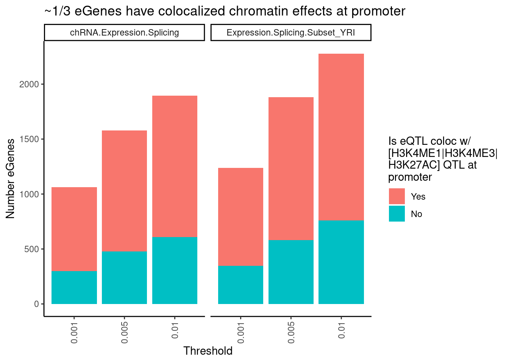
dat.tidy %>%
filter(PC1 %in% c("Expression.Splicing.Subset_YRI", "chRNA.Expression.Splicing")) %>%
separate(Locus, into=c("Locus", "Threshold"), sep = ":") %>%
separate(Threshold, into = c("ColocPhenotypeClass", "Threshold"), sep="_") %>%
filter(ColocPhenotypeClass == "") %>%
mutate(GenePeakPair = paste(P1, P2, sep=";")) %>%
mutate(IsGenePeakPairPromoter = PC2 %in% c("H3K4ME3", "H3K27AC", "H3K4ME1")) %>%
mutate(IsColocalizedGenePeakPromoter = IsColocalizedPair & IsGenePeakPairPromoter) %>%
group_by(Locus, P1, PC1, Threshold) %>%
summarise(GeneContainsColocalizedGenePeakPromoter = any(IsGenePeakPairPromoter)) %>%
group_by(Threshold, PC1) %>%
summarise(FractionColocs = sum(GeneContainsColocalizedGenePeakPromoter),
eGenesAttemptedToColoc = n() - sum(GeneContainsColocalizedGenePeakPromoter)) %>%
ungroup() %>%
gather("IsColocalized", "NumberGenes", FractionColocs, eGenesAttemptedToColoc) %>%
ggplot(aes(x=Threshold, y=NumberGenes, fill=IsColocalized)) +
geom_col() +
facet_wrap(~PC1) +
scale_fill_discrete(labels = c("Yes", "No")) +
labs(title = "~4/5 eGenes have colocalized chromatin effects somewhere",
y = str_wrap("Number eGenes", width=30),
fill = str_wrap("Is eQTL coloc w/ any [H3K4ME1|H3K4ME3|H3K27AC] QTL", width=20)) +
theme_classic() +
theme(axis.text.x = element_text(angle = 90, vjust = 0.5, hjust=1))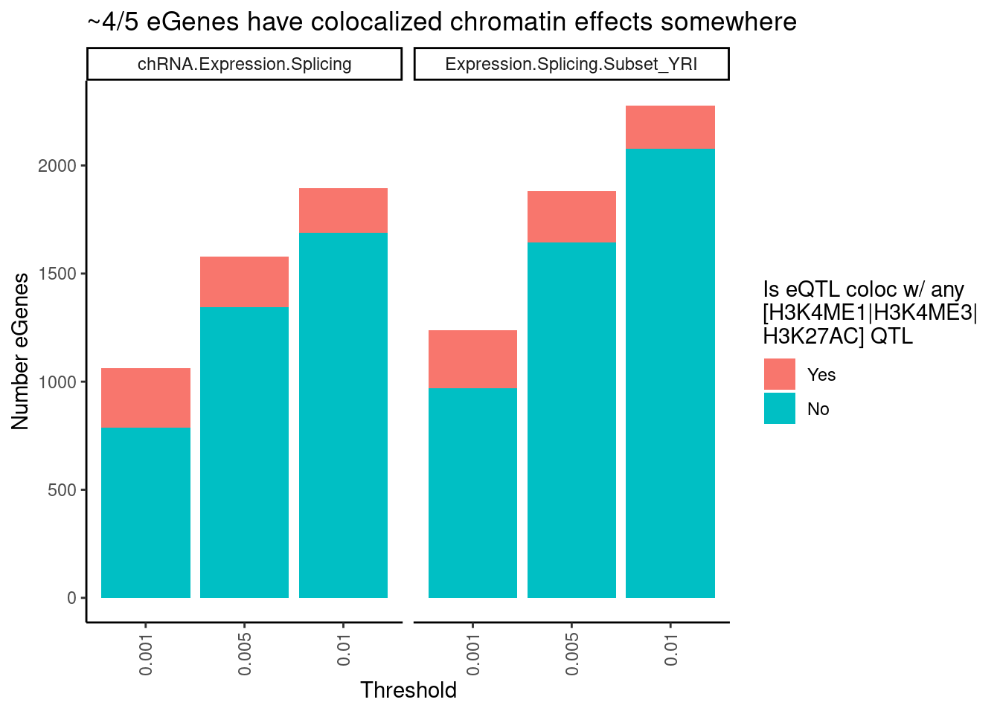
dat.tidy %>%
filter(PC1 %in% c("Expression.Splicing.Subset_YRI", "chRNA.Expression.Splicing")) %>%
separate(Locus, into=c("Locus", "Threshold"), sep = ":") %>%
separate(Threshold, into = c("ColocPhenotypeClass", "Threshold"), sep="_") %>%
filter(ColocPhenotypeClass == "") %>%
mutate(GenePeakPair = paste(P1, P2, sep=";")) %>%
mutate(IsGenePeakPairPromoter = PC2 %in% c("polyA.Splicing")) %>%
mutate(IsColocalizedGenePeakPromoter = IsColocalizedPair & IsGenePeakPairPromoter) %>%
group_by(Locus, P1, PC1, Threshold) %>%
summarise(GeneContainsColocalizedGenePeakPromoter = any(IsGenePeakPairPromoter)) %>%
group_by(Threshold, PC1) %>%
summarise(FractionColocs = sum(GeneContainsColocalizedGenePeakPromoter),
eGenesAttemptedToColoc = n() - sum(GeneContainsColocalizedGenePeakPromoter)) %>%
ungroup() %>%
gather("IsColocalized", "NumberGenes", FractionColocs, eGenesAttemptedToColoc) %>%
ggplot(aes(x=Threshold, y=NumberGenes, fill=IsColocalized)) +
geom_col() +
facet_wrap(~PC1) +
scale_fill_discrete(labels = c("Yes", "No")) +
labs(title = "~1/2 eGenes have colocalized sQTL somewhere",
y = str_wrap("Number eGenes", width=30),
fill = str_wrap("Is eQTL coloc w/ any poly.sQTL", width=20)) +
theme_classic() +
theme(axis.text.x = element_text(angle = 90, vjust = 0.5, hjust=1))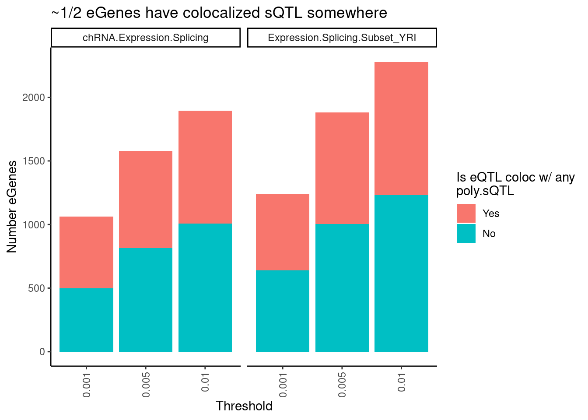
Let’s ask about the coloc rate (between promoter QTLs and eQTLs) now of the tested promoter QTLs…
First, how many test coloc pairs per gene, then what is the rate of colocalization:
dat.tidy %>%
filter(PC1 %in% c("Expression.Splicing.Subset_YRI", "chRNA.Expression.Splicing")) %>%
separate(Locus, into=c("Locus", "Threshold"), sep = ":") %>%
separate(Threshold, into = c("ColocPhenotypeClass", "Threshold"), sep="_") %>%
filter(ColocPhenotypeClass == "") %>%
mutate(GenePeakPair = paste(P1, P2, sep=";")) %>%
filter(GenePeakPair %in% PeaksToTSS$GenePeakPair) %>%
group_by(PC1, PC2, Threshold) %>%
summarise(FractionColocs = n()) %>%
ungroup() %>%
mutate(TopPCs = paste(PC1, PC2)) %>%
mutate(BottomPCs = paste(PC2, PC1)) %>%
select(-PC1, -PC2) %>%
gather(key = "MatrixHalf", value = "PCs", TopPCs, BottomPCs) %>%
separate(PCs, into=c("PC1", "PC2"), sep = " ") %>%
distinct(PC1, PC2, FractionColocs, Threshold, .keep_all = T) %>%
ggplot(aes(x=PC1, y=PC2, fill=FractionColocs)) +
geom_raster() +
geom_text(aes(label=signif(FractionColocs, 2))) +
scale_fill_viridis(option="B", direction = 1) +
facet_wrap(~Threshold) +
theme_classic() +
labs(title = "Number of attempted colocalized trait pairs") +
theme(axis.text.x = element_text(angle = 90, vjust = 0.5, hjust=1))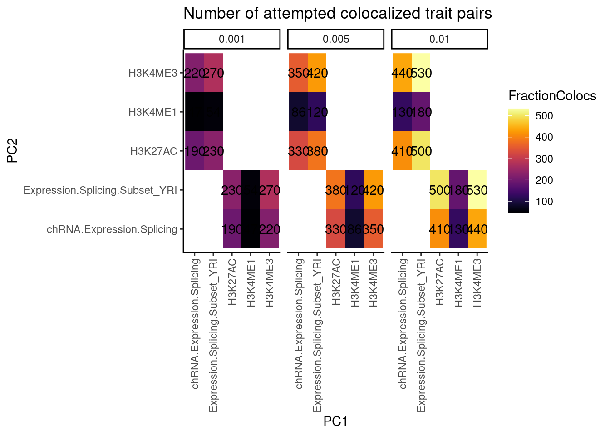
dat.tidy %>%
filter(PC1 %in% c("Expression.Splicing.Subset_YRI", "chRNA.Expression.Splicing")) %>%
separate(Locus, into=c("Locus", "Threshold"), sep = ":") %>%
separate(Threshold, into = c("ColocPhenotypeClass", "Threshold"), sep="_") %>%
filter(ColocPhenotypeClass == "") %>%
mutate(GenePeakPair = paste(P1, P2, sep=";")) %>%
filter(GenePeakPair %in% PeaksToTSS$GenePeakPair) %>%
count(PC1, P1, PC2, Threshold) %>%
ggplot(aes(x=n)) +
stat_ecdf(aes(color = PC2)) +
facet_wrap(~PC1) +
theme_classic() +
labs(caption = "Only including genes where a colocalization was attempted between eQTL and promoter peak QTL",
title = "Usually only one TSS QTL per eGene",
x= "Number promoter peak QTLs per gene",
y="ecdf")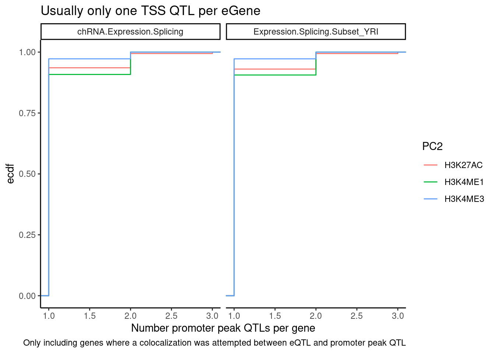
dat.tidy %>%
filter(PC1 %in% c("Expression.Splicing.Subset_YRI", "chRNA.Expression.Splicing")) %>%
separate(Locus, into=c("Locus", "Threshold"), sep = ":") %>%
separate(Threshold, into = c("ColocPhenotypeClass", "Threshold"), sep="_") %>%
filter(ColocPhenotypeClass == "") %>%
mutate(GenePeakPair = paste(P1, P2, sep=";")) %>%
filter(GenePeakPair %in% PeaksToTSS$GenePeakPair) %>%
group_by(PC1, PC2, Threshold) %>%
summarise(FractionColocs = sum(IsColocalizedPair)/n()) %>%
ungroup() %>%
mutate(TopPCs = paste(PC1, PC2)) %>%
mutate(BottomPCs = paste(PC2, PC1)) %>%
select(-PC1, -PC2) %>%
gather(key = "MatrixHalf", value = "PCs", TopPCs, BottomPCs) %>%
separate(PCs, into=c("PC1", "PC2"), sep = " ") %>%
distinct(PC1, PC2, FractionColocs, Threshold, .keep_all = T) %>%
ggplot(aes(x=PC1, y=PC2, fill=FractionColocs)) +
geom_raster() +
geom_text(aes(label=signif(FractionColocs, 2))) +
scale_fill_viridis(option="B", direction = 1, limits=c(0,1)) +
facet_wrap(~Threshold) +
theme_classic() +
labs(title = "Rate of colocalization") +
theme(axis.text.x = element_text(angle = 90, vjust = 0.5, hjust=1))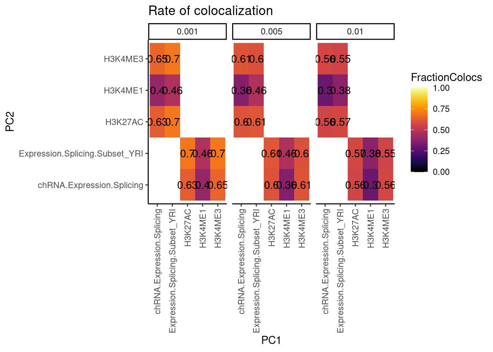
So in other words, when there is a QTL for both a chromatin peak at a TSS, and the eQTL, (meaning I tested for colocalization), the colocalization rate was about 60%.
sessionInfo()R version 3.6.1 (2019-07-05)
Platform: x86_64-pc-linux-gnu (64-bit)
Running under: Scientific Linux 7.4 (Nitrogen)
Matrix products: default
BLAS/LAPACK: /software/openblas-0.2.19-el7-x86_64/lib/libopenblas_haswellp-r0.2.19.so
locale:
[1] LC_CTYPE=en_US.UTF-8 LC_NUMERIC=C
[3] LC_TIME=en_US.UTF-8 LC_COLLATE=en_US.UTF-8
[5] LC_MONETARY=en_US.UTF-8 LC_MESSAGES=en_US.UTF-8
[7] LC_PAPER=en_US.UTF-8 LC_NAME=C
[9] LC_ADDRESS=C LC_TELEPHONE=C
[11] LC_MEASUREMENT=en_US.UTF-8 LC_IDENTIFICATION=C
attached base packages:
[1] stats graphics grDevices utils datasets methods base
other attached packages:
[1] qvalue_2.16.0 data.table_1.14.2 gplots_3.0.1.1
[4] viridis_0.5.1 viridisLite_0.3.0 forcats_0.4.0
[7] stringr_1.4.0 dplyr_0.8.3 purrr_0.3.4
[10] readr_1.3.1 tidyr_1.1.0 tibble_2.1.3
[13] ggplot2_3.3.5 tidyverse_1.3.0
loaded via a namespace (and not attached):
[1] httr_1.4.1 jsonlite_1.6 splines_3.6.1
[4] modelr_0.1.8 gtools_3.8.1 assertthat_0.2.1
[7] cellranger_1.1.0 yaml_2.2.0 pillar_1.4.2
[10] backports_1.1.4 lattice_0.20-38 glue_1.3.1
[13] digest_0.6.20 promises_1.0.1 rvest_0.3.5
[16] colorspace_1.4-1 htmltools_0.3.6 httpuv_1.5.1
[19] plyr_1.8.4 pkgconfig_2.0.2 broom_0.5.2
[22] haven_2.3.1 scales_1.1.0 gdata_2.18.0
[25] whisker_0.3-2 later_0.8.0 git2r_0.26.1
[28] generics_0.0.2 farver_2.1.0 ellipsis_0.2.0.1
[31] withr_2.4.1 cli_2.2.0 magrittr_1.5
[34] crayon_1.3.4 readxl_1.3.1 evaluate_0.14
[37] fs_1.3.1 fansi_0.4.0 nlme_3.1-140
[40] xml2_1.3.2 tools_3.6.1 hms_0.5.3
[43] lifecycle_0.1.0 munsell_0.5.0 reprex_0.3.0
[46] compiler_3.6.1 caTools_1.17.1.2 rlang_0.4.10
[49] grid_3.6.1 rstudioapi_0.10 bitops_1.0-6
[52] labeling_0.3 rmarkdown_1.13 gtable_0.3.0
[55] DBI_1.1.0 reshape2_1.4.3 R6_2.4.0
[58] gridExtra_2.3 lubridate_1.7.4 knitr_1.23
[61] utf8_1.1.4 workflowr_1.6.2 rprojroot_2.0.2
[64] KernSmooth_2.23-15 stringi_1.4.3 Rcpp_1.0.5
[67] vctrs_0.3.1 dbplyr_1.4.2 tidyselect_1.1.0
[70] xfun_0.8